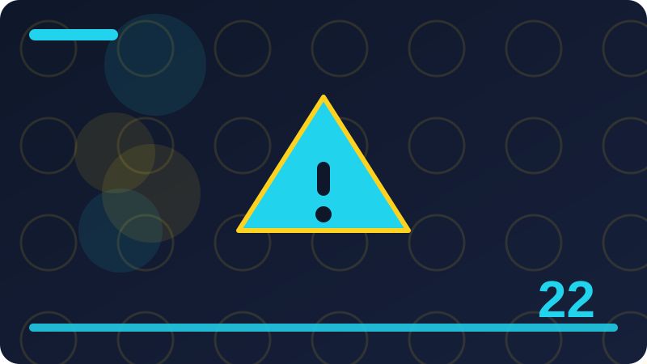

Chapter 22: Error Handling: try, catch and finally

Section 1: What an Exception Is
Working with what an exception is becomes much easier once you see why it exists. Programmers did not invent it to make code longer or harder to read. They invented it because a real problem kept appearing, and this approach solved that problem in a clear and repeatable way. If you keep that problem in mind, the rules will feel sensible instead of arbitrary. Try to name the problem out loud before you write any code, and check that your solution really addresses it.
A good way to learn what an exception is is to build the smallest example that still shows the idea. Keep the example short, give your variables clear names, and print or echo a result so you can see what actually happened. Then change one thing at a time and run the code again. Watching one change produce one effect teaches you far more than rewriting a whole file at once. Small experiments, repeated often, build the confidence you need for larger programs.
When you practise what an exception is, pay close attention to the details that are easy to overlook. A missing symbol, a name spelled two different ways, or a value in the wrong place can all stop a program or change its result. That is normal, and it is not a sign that you are bad at programming. Read any error message carefully, find the line it points to, and compare that line with a working example. Fixing small mistakes patiently is a core programming skill.
There is a difference between code that happens to work once and code that works reliably. With what an exception is, reliable code means thinking about what could go wrong as well as what should go right. Ask yourself what happens with an empty value, a missing value, or a value of the wrong kind. A program that handles those cases calmly is much more useful than one that only works when everything is perfect. Build that habit now, while your programs are still small.
As you study what an exception is, try to connect it with things you have already learned. New ideas rarely stand alone. They usually combine an older idea with one new rule, and recognising the older part makes the new part easier to remember. Look for the familiar pieces first, then focus your attention on what is genuinely new. Drawing that connection in your notes, even in one sentence, will help you recall the idea weeks later when you need it again.
Clarity matters as much as correctness when you use what an exception is. Choose names that say what a thing is for, keep each block of code short enough to read at a glance, and add a brief comment only where the reason for a step is not obvious from the code itself. Another person, or future you, should be able to read the code and understand its purpose without guessing. Clear code is also easier to test, easier to fix, and easier to reuse in another project.
<?php
// Section 1: What an Exception Is
$what_an_exception_is_example = "example for section 1";
echo $what_an_exception_is_example;
// See section 1 for how this idea is used in a real program.Check: When would you use what an exception is, and when would a simpler approach be enough?
Section 2: Exceptions Versus Ordinary Errors
A good way to learn exceptions versus ordinary errors is to build the smallest example that still shows the idea. Keep the example short, give your variables clear names, and print or echo a result so you can see what actually happened. Then change one thing at a time and run the code again. Watching one change produce one effect teaches you far more than rewriting a whole file at once. Small experiments, repeated often, build the confidence you need for larger programs.
When you practise exceptions versus ordinary errors, pay close attention to the details that are easy to overlook. A missing symbol, a name spelled two different ways, or a value in the wrong place can all stop a program or change its result. That is normal, and it is not a sign that you are bad at programming. Read any error message carefully, find the line it points to, and compare that line with a working example. Fixing small mistakes patiently is a core programming skill.
There is a difference between code that happens to work once and code that works reliably. With exceptions versus ordinary errors, reliable code means thinking about what could go wrong as well as what should go right. Ask yourself what happens with an empty value, a missing value, or a value of the wrong kind. A program that handles those cases calmly is much more useful than one that only works when everything is perfect. Build that habit now, while your programs are still small.
As you study exceptions versus ordinary errors, try to connect it with things you have already learned. New ideas rarely stand alone. They usually combine an older idea with one new rule, and recognising the older part makes the new part easier to remember. Look for the familiar pieces first, then focus your attention on what is genuinely new. Drawing that connection in your notes, even in one sentence, will help you recall the idea weeks later when you need it again.
Clarity matters as much as correctness when you use exceptions versus ordinary errors. Choose names that say what a thing is for, keep each block of code short enough to read at a glance, and add a brief comment only where the reason for a step is not obvious from the code itself. Another person, or future you, should be able to read the code and understand its purpose without guessing. Clear code is also easier to test, easier to fix, and easier to reuse in another project.
A common mistake with exceptions versus ordinary errors is to copy an example without understanding it, then to be surprised when a small change breaks everything. Avoid that trap by typing the example yourself instead of pasting it, and by predicting the output before you run it. If your prediction is wrong, that is useful information. Work out why the program behaved differently, and you will have learned something that copying alone could never teach you.
<?php
// Section 2: Exceptions Versus Ordinary Errors
$exceptions_versus_ordinary_errors_example = "example for section 2";
echo $exceptions_versus_ordinary_errors_example;
// See section 2 for how this idea is used in a real program.Check: What is one mistake beginners often make with exceptions versus ordinary errors, and how would you avoid it?
Section 3: The try Block
When you practise the try block, pay close attention to the details that are easy to overlook. A missing symbol, a name spelled two different ways, or a value in the wrong place can all stop a program or change its result. That is normal, and it is not a sign that you are bad at programming. Read any error message carefully, find the line it points to, and compare that line with a working example. Fixing small mistakes patiently is a core programming skill.
There is a difference between code that happens to work once and code that works reliably. With the try block, reliable code means thinking about what could go wrong as well as what should go right. Ask yourself what happens with an empty value, a missing value, or a value of the wrong kind. A program that handles those cases calmly is much more useful than one that only works when everything is perfect. Build that habit now, while your programs are still small.
As you study the try block, try to connect it with things you have already learned. New ideas rarely stand alone. They usually combine an older idea with one new rule, and recognising the older part makes the new part easier to remember. Look for the familiar pieces first, then focus your attention on what is genuinely new. Drawing that connection in your notes, even in one sentence, will help you recall the idea weeks later when you need it again.
Clarity matters as much as correctness when you use the try block. Choose names that say what a thing is for, keep each block of code short enough to read at a glance, and add a brief comment only where the reason for a step is not obvious from the code itself. Another person, or future you, should be able to read the code and understand its purpose without guessing. Clear code is also easier to test, easier to fix, and easier to reuse in another project.
A common mistake with the try block is to copy an example without understanding it, then to be surprised when a small change breaks everything. Avoid that trap by typing the example yourself instead of pasting it, and by predicting the output before you run it. If your prediction is wrong, that is useful information. Work out why the program behaved differently, and you will have learned something that copying alone could never teach you.
Testing is part of learning the try block, not an extra step you add at the end. After your first version works, try a second input, a boundary case, and an input you expect to fail gracefully. Write down what you expected and what you actually saw. When the two match, your understanding is growing. When they do not match, you have found exactly the place to investigate next. That cycle of predict, run, and compare is how professional programmers work.
<?php
// Section 3: The try Block
$the_try_block_example = "example for section 3";
echo $the_try_block_example;
// See section 3 for how this idea is used in a real program.Check: How would you test that your code for the try block works correctly?
Section 4: The catch Block
There is a difference between code that happens to work once and code that works reliably. With the catch block, reliable code means thinking about what could go wrong as well as what should go right. Ask yourself what happens with an empty value, a missing value, or a value of the wrong kind. A program that handles those cases calmly is much more useful than one that only works when everything is perfect. Build that habit now, while your programs are still small.
As you study the catch block, try to connect it with things you have already learned. New ideas rarely stand alone. They usually combine an older idea with one new rule, and recognising the older part makes the new part easier to remember. Look for the familiar pieces first, then focus your attention on what is genuinely new. Drawing that connection in your notes, even in one sentence, will help you recall the idea weeks later when you need it again.
Clarity matters as much as correctness when you use the catch block. Choose names that say what a thing is for, keep each block of code short enough to read at a glance, and add a brief comment only where the reason for a step is not obvious from the code itself. Another person, or future you, should be able to read the code and understand its purpose without guessing. Clear code is also easier to test, easier to fix, and easier to reuse in another project.
A common mistake with the catch block is to copy an example without understanding it, then to be surprised when a small change breaks everything. Avoid that trap by typing the example yourself instead of pasting it, and by predicting the output before you run it. If your prediction is wrong, that is useful information. Work out why the program behaved differently, and you will have learned something that copying alone could never teach you.
Testing is part of learning the catch block, not an extra step you add at the end. After your first version works, try a second input, a boundary case, and an input you expect to fail gracefully. Write down what you expected and what you actually saw. When the two match, your understanding is growing. When they do not match, you have found exactly the place to investigate next. That cycle of predict, run, and compare is how professional programmers work.
Finally, remember that the catch block is a tool, not a goal in itself. The goal is a program that is correct, readable, and kind to the people who use it. Use this tool when it makes the program clearer or safer, and do not force it into places where a simpler approach would do. With practice you will develop a sense for when it helps and when it does not, and that judgement is worth more than knowing every rule by heart.
In this section you will focus on the catch block. The idea is worth learning slowly, because it appears in real programs far more often than beginners expect.
<?php
// Section 4: The catch Block
$the_catch_block_example = "example for section 4";
echo $the_catch_block_example;
// See section 4 for how this idea is used in a real program.Check: What problem does the catch block solve that the older approach did not solve well?
Section 5: Catching by Exception Type
As you study catching by exception type, try to connect it with things you have already learned. New ideas rarely stand alone. They usually combine an older idea with one new rule, and recognising the older part makes the new part easier to remember. Look for the familiar pieces first, then focus your attention on what is genuinely new. Drawing that connection in your notes, even in one sentence, will help you recall the idea weeks later when you need it again.
Clarity matters as much as correctness when you use catching by exception type. Choose names that say what a thing is for, keep each block of code short enough to read at a glance, and add a brief comment only where the reason for a step is not obvious from the code itself. Another person, or future you, should be able to read the code and understand its purpose without guessing. Clear code is also easier to test, easier to fix, and easier to reuse in another project.
A common mistake with catching by exception type is to copy an example without understanding it, then to be surprised when a small change breaks everything. Avoid that trap by typing the example yourself instead of pasting it, and by predicting the output before you run it. If your prediction is wrong, that is useful information. Work out why the program behaved differently, and you will have learned something that copying alone could never teach you.
Testing is part of learning catching by exception type, not an extra step you add at the end. After your first version works, try a second input, a boundary case, and an input you expect to fail gracefully. Write down what you expected and what you actually saw. When the two match, your understanding is growing. When they do not match, you have found exactly the place to investigate next. That cycle of predict, run, and compare is how professional programmers work.
Finally, remember that catching by exception type is a tool, not a goal in itself. The goal is a program that is correct, readable, and kind to the people who use it. Use this tool when it makes the program clearer or safer, and do not force it into places where a simpler approach would do. With practice you will develop a sense for when it helps and when it does not, and that judgement is worth more than knowing every rule by heart.
In this section you will focus on catching by exception type. The idea is worth learning slowly, because it appears in real programs far more often than beginners expect. Start by reading the example, then trace what happens line by line in your head before you run anything. When you can explain each step in plain words, you have understood the idea, not just memorised its spelling. That habit of slow reading will save you hours later, when a small mistake would otherwise be hard to find.
<?php
// Section 5: Catching by Exception Type
$catching_by_exception_type_example = "example for section 5";
echo $catching_by_exception_type_example;
// See section 5 for how this idea is used in a real program.Check: In your own words, what does catching by exception type mean in a PHP program?
Section 6: Catching Multiple Exception Types
Clarity matters as much as correctness when you use catching multiple exception types. Choose names that say what a thing is for, keep each block of code short enough to read at a glance, and add a brief comment only where the reason for a step is not obvious from the code itself. Another person, or future you, should be able to read the code and understand its purpose without guessing. Clear code is also easier to test, easier to fix, and easier to reuse in another project.
A common mistake with catching multiple exception types is to copy an example without understanding it, then to be surprised when a small change breaks everything. Avoid that trap by typing the example yourself instead of pasting it, and by predicting the output before you run it. If your prediction is wrong, that is useful information. Work out why the program behaved differently, and you will have learned something that copying alone could never teach you.
Testing is part of learning catching multiple exception types, not an extra step you add at the end. After your first version works, try a second input, a boundary case, and an input you expect to fail gracefully. Write down what you expected and what you actually saw. When the two match, your understanding is growing. When they do not match, you have found exactly the place to investigate next. That cycle of predict, run, and compare is how professional programmers work.
Finally, remember that catching multiple exception types is a tool, not a goal in itself. The goal is a program that is correct, readable, and kind to the people who use it. Use this tool when it makes the program clearer or safer, and do not force it into places where a simpler approach would do. With practice you will develop a sense for when it helps and when it does not, and that judgement is worth more than knowing every rule by heart.
In this section you will focus on catching multiple exception types. The idea is worth learning slowly, because it appears in real programs far more often than beginners expect. Start by reading the example, then trace what happens line by line in your head before you run anything. When you can explain each step in plain words, you have understood the idea, not just memorised its spelling. That habit of slow reading will save you hours later, when a small mistake would otherwise be hard to find.
Working with catching multiple exception types becomes much easier once you see why it exists. Programmers did not invent it to make code longer or harder to read. They invented it because a real problem kept appearing, and this approach solved that problem in a clear and repeatable way. If you keep that problem in mind, the rules will feel sensible instead of arbitrary. Try to name the problem out loud before you write any code, and check that your solution really addresses it.
<?php
// Section 6: Catching Multiple Exception Types
$catching_multiple_exception_types_example = "example for section 6";
echo $catching_multiple_exception_types_example;
// See section 6 for how this idea is used in a real program.Check: When would you use catching multiple exception types, and when would a simpler approach be enough?
Section 7: The finally Block
A common mistake with the finally block is to copy an example without understanding it, then to be surprised when a small change breaks everything. Avoid that trap by typing the example yourself instead of pasting it, and by predicting the output before you run it. If your prediction is wrong, that is useful information. Work out why the program behaved differently, and you will have learned something that copying alone could never teach you.
Testing is part of learning the finally block, not an extra step you add at the end. After your first version works, try a second input, a boundary case, and an input you expect to fail gracefully. Write down what you expected and what you actually saw. When the two match, your understanding is growing. When they do not match, you have found exactly the place to investigate next. That cycle of predict, run, and compare is how professional programmers work.
Finally, remember that the finally block is a tool, not a goal in itself. The goal is a program that is correct, readable, and kind to the people who use it. Use this tool when it makes the program clearer or safer, and do not force it into places where a simpler approach would do. With practice you will develop a sense for when it helps and when it does not, and that judgement is worth more than knowing every rule by heart.
In this section you will focus on the finally block. The idea is worth learning slowly, because it appears in real programs far more often than beginners expect. Start by reading the example, then trace what happens line by line in your head before you run anything. When you can explain each step in plain words, you have understood the idea, not just memorised its spelling. That habit of slow reading will save you hours later, when a small mistake would otherwise be hard to find.
Working with the finally block becomes much easier once you see why it exists. Programmers did not invent it to make code longer or harder to read. They invented it because a real problem kept appearing, and this approach solved that problem in a clear and repeatable way. If you keep that problem in mind, the rules will feel sensible instead of arbitrary. Try to name the problem out loud before you write any code, and check that your solution really addresses it.
A good way to learn the finally block is to build the smallest example that still shows the idea. Keep the example short, give your variables clear names, and print or echo a result so you can see what actually happened. Then change one thing at a time and run the code again. Watching one change produce one effect teaches you far more than rewriting a whole file at once. Small experiments, repeated often, build the confidence you need for larger programs.
<?php
// Section 7: The finally Block
$the_finally_block_example = "example for section 7";
echo $the_finally_block_example;
// See section 7 for how this idea is used in a real program.Check: What is one mistake beginners often make with the finally block, and how would you avoid it?
Section 8: Throwing an Exception
Testing is part of learning throwing an exception, not an extra step you add at the end. After your first version works, try a second input, a boundary case, and an input you expect to fail gracefully. Write down what you expected and what you actually saw. When the two match, your understanding is growing. When they do not match, you have found exactly the place to investigate next. That cycle of predict, run, and compare is how professional programmers work.
Finally, remember that throwing an exception is a tool, not a goal in itself. The goal is a program that is correct, readable, and kind to the people who use it. Use this tool when it makes the program clearer or safer, and do not force it into places where a simpler approach would do. With practice you will develop a sense for when it helps and when it does not, and that judgement is worth more than knowing every rule by heart.
In this section you will focus on throwing an exception. The idea is worth learning slowly, because it appears in real programs far more often than beginners expect. Start by reading the example, then trace what happens line by line in your head before you run anything. When you can explain each step in plain words, you have understood the idea, not just memorised its spelling. That habit of slow reading will save you hours later, when a small mistake would otherwise be hard to find.
Working with throwing an exception becomes much easier once you see why it exists. Programmers did not invent it to make code longer or harder to read. They invented it because a real problem kept appearing, and this approach solved that problem in a clear and repeatable way. If you keep that problem in mind, the rules will feel sensible instead of arbitrary. Try to name the problem out loud before you write any code, and check that your solution really addresses it.
A good way to learn throwing an exception is to build the smallest example that still shows the idea. Keep the example short, give your variables clear names, and print or echo a result so you can see what actually happened. Then change one thing at a time and run the code again. Watching one change produce one effect teaches you far more than rewriting a whole file at once. Small experiments, repeated often, build the confidence you need for larger programs.
When you practise throwing an exception, pay close attention to the details that are easy to overlook. A missing symbol, a name spelled two different ways, or a value in the wrong place can all stop a program or change its result. That is normal, and it is not a sign that you are bad at programming. Read any error message carefully, find the line it points to, and compare that line with a working example. Fixing small mistakes patiently is a core programming skill.
<?php
// Section 8: Throwing an Exception
$throwing_an_exception_example = "example for section 8";
echo $throwing_an_exception_example;
// See section 8 for how this idea is used in a real program.Check: How would you test that your code for throwing an exception works correctly?
Section 9: Creating an Exception Object
Finally, remember that creating an exception object is a tool, not a goal in itself. The goal is a program that is correct, readable, and kind to the people who use it. Use this tool when it makes the program clearer or safer, and do not force it into places where a simpler approach would do. With practice you will develop a sense for when it helps and when it does not, and that judgement is worth more than knowing every rule by heart.
In this section you will focus on creating an exception object. The idea is worth learning slowly, because it appears in real programs far more often than beginners expect. Start by reading the example, then trace what happens line by line in your head before you run anything. When you can explain each step in plain words, you have understood the idea, not just memorised its spelling. That habit of slow reading will save you hours later, when a small mistake would otherwise be hard to find.
Working with creating an exception object becomes much easier once you see why it exists. Programmers did not invent it to make code longer or harder to read. They invented it because a real problem kept appearing, and this approach solved that problem in a clear and repeatable way. If you keep that problem in mind, the rules will feel sensible instead of arbitrary. Try to name the problem out loud before you write any code, and check that your solution really addresses it.
A good way to learn creating an exception object is to build the smallest example that still shows the idea. Keep the example short, give your variables clear names, and print or echo a result so you can see what actually happened. Then change one thing at a time and run the code again. Watching one change produce one effect teaches you far more than rewriting a whole file at once. Small experiments, repeated often, build the confidence you need for larger programs.
When you practise creating an exception object, pay close attention to the details that are easy to overlook. A missing symbol, a name spelled two different ways, or a value in the wrong place can all stop a program or change its result. That is normal, and it is not a sign that you are bad at programming. Read any error message carefully, find the line it points to, and compare that line with a working example. Fixing small mistakes patiently is a core programming skill.
There is a difference between code that happens to work once and code that works reliably. With creating an exception object, reliable code means thinking about what could go wrong as well as what should go right. Ask yourself what happens with an empty value, a missing value, or a value of the wrong kind. A program that handles those cases calmly is much more useful than one that only works when everything is perfect. Build that habit now, while your programs are still small.
<?php
// Section 9: Creating an Exception Object
$creating_an_exception_object_example = "example for section 9";
echo $creating_an_exception_object_example;
// See section 9 for how this idea is used in a real program.Check: What problem does creating an exception object solve that the older approach did not solve well?
Section 10: The Exception Message
In this section you will focus on the exception message. The idea is worth learning slowly, because it appears in real programs far more often than beginners expect. Start by reading the example, then trace what happens line by line in your head before you run anything. When you can explain each step in plain words, you have understood the idea, not just memorised its spelling. That habit of slow reading will save you hours later, when a small mistake would otherwise be hard to find.
Working with the exception message becomes much easier once you see why it exists. Programmers did not invent it to make code longer or harder to read. They invented it because a real problem kept appearing, and this approach solved that problem in a clear and repeatable way. If you keep that problem in mind, the rules will feel sensible instead of arbitrary. Try to name the problem out loud before you write any code, and check that your solution really addresses it.
A good way to learn the exception message is to build the smallest example that still shows the idea. Keep the example short, give your variables clear names, and print or echo a result so you can see what actually happened. Then change one thing at a time and run the code again. Watching one change produce one effect teaches you far more than rewriting a whole file at once. Small experiments, repeated often, build the confidence you need for larger programs.
When you practise the exception message, pay close attention to the details that are easy to overlook. A missing symbol, a name spelled two different ways, or a value in the wrong place can all stop a program or change its result. That is normal, and it is not a sign that you are bad at programming. Read any error message carefully, find the line it points to, and compare that line with a working example. Fixing small mistakes patiently is a core programming skill.
There is a difference between code that happens to work once and code that works reliably. With the exception message, reliable code means thinking about what could go wrong as well as what should go right. Ask yourself what happens with an empty value, a missing value, or a value of the wrong kind. A program that handles those cases calmly is much more useful than one that only works when everything is perfect. Build that habit now, while your programs are still small.
As you study the exception message, try to connect it with things you have already learned. New ideas rarely stand alone. They usually combine an older idea with one new rule, and recognising the older part makes the new part easier to remember. Look for the familiar pieces first, then focus your attention on what is genuinely new. Drawing that connection in your notes, even in one sentence, will help you recall the idea weeks later when you need it again.
<?php
// Section 10: The Exception Message
$the_exception_message_example = "example for section 10";
echo $the_exception_message_example;
// See section 10 for how this idea is used in a real program.Check: In your own words, what does the exception message mean in a PHP program?
Section 11: Exception Codes
Working with exception codes becomes much easier once you see why it exists. Programmers did not invent it to make code longer or harder to read. They invented it because a real problem kept appearing, and this approach solved that problem in a clear and repeatable way. If you keep that problem in mind, the rules will feel sensible instead of arbitrary. Try to name the problem out loud before you write any code, and check that your solution really addresses it.
A good way to learn exception codes is to build the smallest example that still shows the idea. Keep the example short, give your variables clear names, and print or echo a result so you can see what actually happened. Then change one thing at a time and run the code again. Watching one change produce one effect teaches you far more than rewriting a whole file at once. Small experiments, repeated often, build the confidence you need for larger programs.
When you practise exception codes, pay close attention to the details that are easy to overlook. A missing symbol, a name spelled two different ways, or a value in the wrong place can all stop a program or change its result. That is normal, and it is not a sign that you are bad at programming. Read any error message carefully, find the line it points to, and compare that line with a working example. Fixing small mistakes patiently is a core programming skill.
There is a difference between code that happens to work once and code that works reliably. With exception codes, reliable code means thinking about what could go wrong as well as what should go right. Ask yourself what happens with an empty value, a missing value, or a value of the wrong kind. A program that handles those cases calmly is much more useful than one that only works when everything is perfect. Build that habit now, while your programs are still small.
As you study exception codes, try to connect it with things you have already learned. New ideas rarely stand alone. They usually combine an older idea with one new rule, and recognising the older part makes the new part easier to remember. Look for the familiar pieces first, then focus your attention on what is genuinely new. Drawing that connection in your notes, even in one sentence, will help you recall the idea weeks later when you need it again.
Clarity matters as much as correctness when you use exception codes. Choose names that say what a thing is for, keep each block of code short enough to read at a glance, and add a brief comment only where the reason for a step is not obvious from the code itself. Another person, or future you, should be able to read the code and understand its purpose without guessing. Clear code is also easier to test, easier to fix, and easier to reuse in another project.
<?php
// Section 11: Exception Codes
$exception_codes_example = "example for section 11";
echo $exception_codes_example;
// See section 11 for how this idea is used in a real program.Check: When would you use exception codes, and when would a simpler approach be enough?
Section 12: Exception Files and Lines
A good way to learn exception files and lines is to build the smallest example that still shows the idea. Keep the example short, give your variables clear names, and print or echo a result so you can see what actually happened. Then change one thing at a time and run the code again. Watching one change produce one effect teaches you far more than rewriting a whole file at once. Small experiments, repeated often, build the confidence you need for larger programs.
When you practise exception files and lines, pay close attention to the details that are easy to overlook. A missing symbol, a name spelled two different ways, or a value in the wrong place can all stop a program or change its result. That is normal, and it is not a sign that you are bad at programming. Read any error message carefully, find the line it points to, and compare that line with a working example. Fixing small mistakes patiently is a core programming skill.
There is a difference between code that happens to work once and code that works reliably. With exception files and lines, reliable code means thinking about what could go wrong as well as what should go right. Ask yourself what happens with an empty value, a missing value, or a value of the wrong kind. A program that handles those cases calmly is much more useful than one that only works when everything is perfect. Build that habit now, while your programs are still small.
As you study exception files and lines, try to connect it with things you have already learned. New ideas rarely stand alone. They usually combine an older idea with one new rule, and recognising the older part makes the new part easier to remember. Look for the familiar pieces first, then focus your attention on what is genuinely new. Drawing that connection in your notes, even in one sentence, will help you recall the idea weeks later when you need it again.
Clarity matters as much as correctness when you use exception files and lines. Choose names that say what a thing is for, keep each block of code short enough to read at a glance, and add a brief comment only where the reason for a step is not obvious from the code itself. Another person, or future you, should be able to read the code and understand its purpose without guessing. Clear code is also easier to test, easier to fix, and easier to reuse in another project.
A common mistake with exception files and lines is to copy an example without understanding it, then to be surprised when a small change breaks everything. Avoid that trap by typing the example yourself instead of pasting it, and by predicting the output before you run it. If your prediction is wrong, that is useful information. Work out why the program behaved differently, and you will have learned something that copying alone could never teach you.
<?php
// Section 12: Exception Files and Lines
$exception_files_and_lines_example = "example for section 12";
echo $exception_files_and_lines_example;
// See section 12 for how this idea is used in a real program.Check: What is one mistake beginners often make with exception files and lines, and how would you avoid it?
Section 13: Chaining Exceptions with Previous
When you practise chaining exceptions with previous, pay close attention to the details that are easy to overlook. A missing symbol, a name spelled two different ways, or a value in the wrong place can all stop a program or change its result. That is normal, and it is not a sign that you are bad at programming. Read any error message carefully, find the line it points to, and compare that line with a working example. Fixing small mistakes patiently is a core programming skill.
There is a difference between code that happens to work once and code that works reliably. With chaining exceptions with previous, reliable code means thinking about what could go wrong as well as what should go right. Ask yourself what happens with an empty value, a missing value, or a value of the wrong kind. A program that handles those cases calmly is much more useful than one that only works when everything is perfect. Build that habit now, while your programs are still small.
As you study chaining exceptions with previous, try to connect it with things you have already learned. New ideas rarely stand alone. They usually combine an older idea with one new rule, and recognising the older part makes the new part easier to remember. Look for the familiar pieces first, then focus your attention on what is genuinely new. Drawing that connection in your notes, even in one sentence, will help you recall the idea weeks later when you need it again.
Clarity matters as much as correctness when you use chaining exceptions with previous. Choose names that say what a thing is for, keep each block of code short enough to read at a glance, and add a brief comment only where the reason for a step is not obvious from the code itself. Another person, or future you, should be able to read the code and understand its purpose without guessing. Clear code is also easier to test, easier to fix, and easier to reuse in another project.
A common mistake with chaining exceptions with previous is to copy an example without understanding it, then to be surprised when a small change breaks everything. Avoid that trap by typing the example yourself instead of pasting it, and by predicting the output before you run it. If your prediction is wrong, that is useful information. Work out why the program behaved differently, and you will have learned something that copying alone could never teach you.
Testing is part of learning chaining exceptions with previous, not an extra step you add at the end. After your first version works, try a second input, a boundary case, and an input you expect to fail gracefully. Write down what you expected and what you actually saw. When the two match, your understanding is growing. When they do not match, you have found exactly the place to investigate next. That cycle of predict, run, and compare is how professional programmers work.
<?php
// Section 13: Chaining Exceptions with Previous
$chaining_exceptions_with_previous_example = "example for section 13";
echo $chaining_exceptions_with_previous_example;
// See section 13 for how this idea is used in a real program.Check: How would you test that your code for chaining exceptions with previous works correctly?
Section 14: The Error Class
There is a difference between code that happens to work once and code that works reliably. With the error class, reliable code means thinking about what could go wrong as well as what should go right. Ask yourself what happens with an empty value, a missing value, or a value of the wrong kind. A program that handles those cases calmly is much more useful than one that only works when everything is perfect. Build that habit now, while your programs are still small.
As you study the error class, try to connect it with things you have already learned. New ideas rarely stand alone. They usually combine an older idea with one new rule, and recognising the older part makes the new part easier to remember. Look for the familiar pieces first, then focus your attention on what is genuinely new. Drawing that connection in your notes, even in one sentence, will help you recall the idea weeks later when you need it again.
Clarity matters as much as correctness when you use the error class. Choose names that say what a thing is for, keep each block of code short enough to read at a glance, and add a brief comment only where the reason for a step is not obvious from the code itself. Another person, or future you, should be able to read the code and understand its purpose without guessing. Clear code is also easier to test, easier to fix, and easier to reuse in another project.
A common mistake with the error class is to copy an example without understanding it, then to be surprised when a small change breaks everything. Avoid that trap by typing the example yourself instead of pasting it, and by predicting the output before you run it. If your prediction is wrong, that is useful information. Work out why the program behaved differently, and you will have learned something that copying alone could never teach you.
Testing is part of learning the error class, not an extra step you add at the end. After your first version works, try a second input, a boundary case, and an input you expect to fail gracefully. Write down what you expected and what you actually saw. When the two match, your understanding is growing. When they do not match, you have found exactly the place to investigate next. That cycle of predict, run, and compare is how professional programmers work.
Finally, remember that the error class is a tool, not a goal in itself. The goal is a program that is correct, readable, and kind to the people who use it. Use this tool when it makes the program clearer or safer, and do not force it into places where a simpler approach would do. With practice you will develop a sense for when it helps and when it does not, and that judgement is worth more than knowing every rule by heart.
In this section you will focus on the error class. The idea is worth learning slowly, because it appears in real programs far more often than beginners expect.
<?php
// Section 14: The Error Class
$the_error_class_example = "example for section 14";
echo $the_error_class_example;
// See section 14 for how this idea is used in a real program.Check: What problem does the error class solve that the older approach did not solve well?
Section 15: Errors That Are Not Exceptions
As you study errors that are not exceptions, try to connect it with things you have already learned. New ideas rarely stand alone. They usually combine an older idea with one new rule, and recognising the older part makes the new part easier to remember. Look for the familiar pieces first, then focus your attention on what is genuinely new. Drawing that connection in your notes, even in one sentence, will help you recall the idea weeks later when you need it again.
Clarity matters as much as correctness when you use errors that are not exceptions. Choose names that say what a thing is for, keep each block of code short enough to read at a glance, and add a brief comment only where the reason for a step is not obvious from the code itself. Another person, or future you, should be able to read the code and understand its purpose without guessing. Clear code is also easier to test, easier to fix, and easier to reuse in another project.
A common mistake with errors that are not exceptions is to copy an example without understanding it, then to be surprised when a small change breaks everything. Avoid that trap by typing the example yourself instead of pasting it, and by predicting the output before you run it. If your prediction is wrong, that is useful information. Work out why the program behaved differently, and you will have learned something that copying alone could never teach you.
Testing is part of learning errors that are not exceptions, not an extra step you add at the end. After your first version works, try a second input, a boundary case, and an input you expect to fail gracefully. Write down what you expected and what you actually saw. When the two match, your understanding is growing. When they do not match, you have found exactly the place to investigate next. That cycle of predict, run, and compare is how professional programmers work.
Finally, remember that errors that are not exceptions is a tool, not a goal in itself. The goal is a program that is correct, readable, and kind to the people who use it. Use this tool when it makes the program clearer or safer, and do not force it into places where a simpler approach would do. With practice you will develop a sense for when it helps and when it does not, and that judgement is worth more than knowing every rule by heart.
In this section you will focus on errors that are not exceptions. The idea is worth learning slowly, because it appears in real programs far more often than beginners expect. Start by reading the example, then trace what happens line by line in your head before you run anything. When you can explain each step in plain words, you have understood the idea, not just memorised its spelling. That habit of slow reading will save you hours later, when a small mistake would otherwise be hard to find.
<?php
// Section 15: Errors That Are Not Exceptions
$errors_that_are_not_exceptions_example = "example for section 15";
echo $errors_that_are_not_exceptions_example;
// See section 15 for how this idea is used in a real program.Check: In your own words, what does errors that are not exceptions mean in a PHP program?
Section 16: TypeError in Practice
Clarity matters as much as correctness when you use typeerror in practice. Choose names that say what a thing is for, keep each block of code short enough to read at a glance, and add a brief comment only where the reason for a step is not obvious from the code itself. Another person, or future you, should be able to read the code and understand its purpose without guessing. Clear code is also easier to test, easier to fix, and easier to reuse in another project.
A common mistake with typeerror in practice is to copy an example without understanding it, then to be surprised when a small change breaks everything. Avoid that trap by typing the example yourself instead of pasting it, and by predicting the output before you run it. If your prediction is wrong, that is useful information. Work out why the program behaved differently, and you will have learned something that copying alone could never teach you.
Testing is part of learning typeerror in practice, not an extra step you add at the end. After your first version works, try a second input, a boundary case, and an input you expect to fail gracefully. Write down what you expected and what you actually saw. When the two match, your understanding is growing. When they do not match, you have found exactly the place to investigate next. That cycle of predict, run, and compare is how professional programmers work.
Finally, remember that typeerror in practice is a tool, not a goal in itself. The goal is a program that is correct, readable, and kind to the people who use it. Use this tool when it makes the program clearer or safer, and do not force it into places where a simpler approach would do. With practice you will develop a sense for when it helps and when it does not, and that judgement is worth more than knowing every rule by heart.
In this section you will focus on typeerror in practice. The idea is worth learning slowly, because it appears in real programs far more often than beginners expect. Start by reading the example, then trace what happens line by line in your head before you run anything. When you can explain each step in plain words, you have understood the idea, not just memorised its spelling. That habit of slow reading will save you hours later, when a small mistake would otherwise be hard to find.
Working with typeerror in practice becomes much easier once you see why it exists. Programmers did not invent it to make code longer or harder to read. They invented it because a real problem kept appearing, and this approach solved that problem in a clear and repeatable way. If you keep that problem in mind, the rules will feel sensible instead of arbitrary. Try to name the problem out loud before you write any code, and check that your solution really addresses it.
<?php
// Section 16: TypeError in Practice
$typeerror_in_practice_example = "example for section 16";
echo $typeerror_in_practice_example;
// See section 16 for how this idea is used in a real program.Check: When would you use typeerror in practice, and when would a simpler approach be enough?
Section 17: Division and Arithmetic Errors
A common mistake with division and arithmetic errors is to copy an example without understanding it, then to be surprised when a small change breaks everything. Avoid that trap by typing the example yourself instead of pasting it, and by predicting the output before you run it. If your prediction is wrong, that is useful information. Work out why the program behaved differently, and you will have learned something that copying alone could never teach you.
Testing is part of learning division and arithmetic errors, not an extra step you add at the end. After your first version works, try a second input, a boundary case, and an input you expect to fail gracefully. Write down what you expected and what you actually saw. When the two match, your understanding is growing. When they do not match, you have found exactly the place to investigate next. That cycle of predict, run, and compare is how professional programmers work.
Finally, remember that division and arithmetic errors is a tool, not a goal in itself. The goal is a program that is correct, readable, and kind to the people who use it. Use this tool when it makes the program clearer or safer, and do not force it into places where a simpler approach would do. With practice you will develop a sense for when it helps and when it does not, and that judgement is worth more than knowing every rule by heart.
In this section you will focus on division and arithmetic errors. The idea is worth learning slowly, because it appears in real programs far more often than beginners expect. Start by reading the example, then trace what happens line by line in your head before you run anything. When you can explain each step in plain words, you have understood the idea, not just memorised its spelling. That habit of slow reading will save you hours later, when a small mistake would otherwise be hard to find.
Working with division and arithmetic errors becomes much easier once you see why it exists. Programmers did not invent it to make code longer or harder to read. They invented it because a real problem kept appearing, and this approach solved that problem in a clear and repeatable way. If you keep that problem in mind, the rules will feel sensible instead of arbitrary. Try to name the problem out loud before you write any code, and check that your solution really addresses it.
A good way to learn division and arithmetic errors is to build the smallest example that still shows the idea. Keep the example short, give your variables clear names, and print or echo a result so you can see what actually happened. Then change one thing at a time and run the code again. Watching one change produce one effect teaches you far more than rewriting a whole file at once. Small experiments, repeated often, build the confidence you need for larger programs.
<?php
// Section 17: Division and Arithmetic Errors
$division_and_arithmetic_errors_example = "example for section 17";
echo $division_and_arithmetic_errors_example;
// See section 17 for how this idea is used in a real program.Check: What is one mistake beginners often make with division and arithmetic errors, and how would you avoid it?
Section 18: Catching Throwable
Testing is part of learning catching throwable, not an extra step you add at the end. After your first version works, try a second input, a boundary case, and an input you expect to fail gracefully. Write down what you expected and what you actually saw. When the two match, your understanding is growing. When they do not match, you have found exactly the place to investigate next. That cycle of predict, run, and compare is how professional programmers work.
Finally, remember that catching throwable is a tool, not a goal in itself. The goal is a program that is correct, readable, and kind to the people who use it. Use this tool when it makes the program clearer or safer, and do not force it into places where a simpler approach would do. With practice you will develop a sense for when it helps and when it does not, and that judgement is worth more than knowing every rule by heart.
In this section you will focus on catching throwable. The idea is worth learning slowly, because it appears in real programs far more often than beginners expect. Start by reading the example, then trace what happens line by line in your head before you run anything. When you can explain each step in plain words, you have understood the idea, not just memorised its spelling. That habit of slow reading will save you hours later, when a small mistake would otherwise be hard to find.
Working with catching throwable becomes much easier once you see why it exists. Programmers did not invent it to make code longer or harder to read. They invented it because a real problem kept appearing, and this approach solved that problem in a clear and repeatable way. If you keep that problem in mind, the rules will feel sensible instead of arbitrary. Try to name the problem out loud before you write any code, and check that your solution really addresses it.
A good way to learn catching throwable is to build the smallest example that still shows the idea. Keep the example short, give your variables clear names, and print or echo a result so you can see what actually happened. Then change one thing at a time and run the code again. Watching one change produce one effect teaches you far more than rewriting a whole file at once. Small experiments, repeated often, build the confidence you need for larger programs.
When you practise catching throwable, pay close attention to the details that are easy to overlook. A missing symbol, a name spelled two different ways, or a value in the wrong place can all stop a program or change its result. That is normal, and it is not a sign that you are bad at programming. Read any error message carefully, find the line it points to, and compare that line with a working example. Fixing small mistakes patiently is a core programming skill.
<?php
// Section 18: Catching Throwable
$catching_throwable_example = "example for section 18";
echo $catching_throwable_example;
// See section 18 for how this idea is used in a real program.Check: How would you test that your code for catching throwable works correctly?
Section 19: Multiple catch Blocks in Order
Finally, remember that multiple catch blocks in order is a tool, not a goal in itself. The goal is a program that is correct, readable, and kind to the people who use it. Use this tool when it makes the program clearer or safer, and do not force it into places where a simpler approach would do. With practice you will develop a sense for when it helps and when it does not, and that judgement is worth more than knowing every rule by heart.
In this section you will focus on multiple catch blocks in order. The idea is worth learning slowly, because it appears in real programs far more often than beginners expect. Start by reading the example, then trace what happens line by line in your head before you run anything. When you can explain each step in plain words, you have understood the idea, not just memorised its spelling. That habit of slow reading will save you hours later, when a small mistake would otherwise be hard to find.
Working with multiple catch blocks in order becomes much easier once you see why it exists. Programmers did not invent it to make code longer or harder to read. They invented it because a real problem kept appearing, and this approach solved that problem in a clear and repeatable way. If you keep that problem in mind, the rules will feel sensible instead of arbitrary. Try to name the problem out loud before you write any code, and check that your solution really addresses it.
A good way to learn multiple catch blocks in order is to build the smallest example that still shows the idea. Keep the example short, give your variables clear names, and print or echo a result so you can see what actually happened. Then change one thing at a time and run the code again. Watching one change produce one effect teaches you far more than rewriting a whole file at once. Small experiments, repeated often, build the confidence you need for larger programs.
When you practise multiple catch blocks in order, pay close attention to the details that are easy to overlook. A missing symbol, a name spelled two different ways, or a value in the wrong place can all stop a program or change its result. That is normal, and it is not a sign that you are bad at programming. Read any error message carefully, find the line it points to, and compare that line with a working example. Fixing small mistakes patiently is a core programming skill.
There is a difference between code that happens to work once and code that works reliably. With multiple catch blocks in order, reliable code means thinking about what could go wrong as well as what should go right. Ask yourself what happens with an empty value, a missing value, or a value of the wrong kind. A program that handles those cases calmly is much more useful than one that only works when everything is perfect. Build that habit now, while your programs are still small.
<?php
// Section 19: Multiple catch Blocks in Order
$multiple_catch_blocks_in_order_example = "example for section 19";
echo $multiple_catch_blocks_in_order_example;
// See section 19 for how this idea is used in a real program.Check: What problem does multiple catch blocks in order solve that the older approach did not solve well?
Section 20: Catching a Parent Exception Class
In this section you will focus on catching a parent exception class. The idea is worth learning slowly, because it appears in real programs far more often than beginners expect. Start by reading the example, then trace what happens line by line in your head before you run anything. When you can explain each step in plain words, you have understood the idea, not just memorised its spelling. That habit of slow reading will save you hours later, when a small mistake would otherwise be hard to find.
Working with catching a parent exception class becomes much easier once you see why it exists. Programmers did not invent it to make code longer or harder to read. They invented it because a real problem kept appearing, and this approach solved that problem in a clear and repeatable way. If you keep that problem in mind, the rules will feel sensible instead of arbitrary. Try to name the problem out loud before you write any code, and check that your solution really addresses it.
A good way to learn catching a parent exception class is to build the smallest example that still shows the idea. Keep the example short, give your variables clear names, and print or echo a result so you can see what actually happened. Then change one thing at a time and run the code again. Watching one change produce one effect teaches you far more than rewriting a whole file at once. Small experiments, repeated often, build the confidence you need for larger programs.
When you practise catching a parent exception class, pay close attention to the details that are easy to overlook. A missing symbol, a name spelled two different ways, or a value in the wrong place can all stop a program or change its result. That is normal, and it is not a sign that you are bad at programming. Read any error message carefully, find the line it points to, and compare that line with a working example. Fixing small mistakes patiently is a core programming skill.
There is a difference between code that happens to work once and code that works reliably. With catching a parent exception class, reliable code means thinking about what could go wrong as well as what should go right. Ask yourself what happens with an empty value, a missing value, or a value of the wrong kind. A program that handles those cases calmly is much more useful than one that only works when everything is perfect. Build that habit now, while your programs are still small.
As you study catching a parent exception class, try to connect it with things you have already learned. New ideas rarely stand alone. They usually combine an older idea with one new rule, and recognising the older part makes the new part easier to remember. Look for the familiar pieces first, then focus your attention on what is genuinely new. Drawing that connection in your notes, even in one sentence, will help you recall the idea weeks later when you need it again.
<?php
// Section 20: Catching a Parent Exception Class
$catching_a_parent_exception_class_example = "example for section 20";
echo $catching_a_parent_exception_class_example;
// See section 20 for how this idea is used in a real program.Check: In your own words, what does catching a parent exception class mean in a PHP program?
Section 21: Re-throwing an Exception
Working with re-throwing an exception becomes much easier once you see why it exists. Programmers did not invent it to make code longer or harder to read. They invented it because a real problem kept appearing, and this approach solved that problem in a clear and repeatable way. If you keep that problem in mind, the rules will feel sensible instead of arbitrary. Try to name the problem out loud before you write any code, and check that your solution really addresses it.
A good way to learn re-throwing an exception is to build the smallest example that still shows the idea. Keep the example short, give your variables clear names, and print or echo a result so you can see what actually happened. Then change one thing at a time and run the code again. Watching one change produce one effect teaches you far more than rewriting a whole file at once. Small experiments, repeated often, build the confidence you need for larger programs.
When you practise re-throwing an exception, pay close attention to the details that are easy to overlook. A missing symbol, a name spelled two different ways, or a value in the wrong place can all stop a program or change its result. That is normal, and it is not a sign that you are bad at programming. Read any error message carefully, find the line it points to, and compare that line with a working example. Fixing small mistakes patiently is a core programming skill.
There is a difference between code that happens to work once and code that works reliably. With re-throwing an exception, reliable code means thinking about what could go wrong as well as what should go right. Ask yourself what happens with an empty value, a missing value, or a value of the wrong kind. A program that handles those cases calmly is much more useful than one that only works when everything is perfect. Build that habit now, while your programs are still small.
As you study re-throwing an exception, try to connect it with things you have already learned. New ideas rarely stand alone. They usually combine an older idea with one new rule, and recognising the older part makes the new part easier to remember. Look for the familiar pieces first, then focus your attention on what is genuinely new. Drawing that connection in your notes, even in one sentence, will help you recall the idea weeks later when you need it again.
Clarity matters as much as correctness when you use re-throwing an exception. Choose names that say what a thing is for, keep each block of code short enough to read at a glance, and add a brief comment only where the reason for a step is not obvious from the code itself. Another person, or future you, should be able to read the code and understand its purpose without guessing. Clear code is also easier to test, easier to fix, and easier to reuse in another project.
<?php
// Section 21: Re-throwing an Exception
$re_throwing_an_exception_example = "example for section 21";
echo $re_throwing_an_exception_example;
// See section 21 for how this idea is used in a real program.Check: When would you use re-throwing an exception, and when would a simpler approach be enough?
Section 22: Throwing Inside a Function
A good way to learn throwing inside a function is to build the smallest example that still shows the idea. Keep the example short, give your variables clear names, and print or echo a result so you can see what actually happened. Then change one thing at a time and run the code again. Watching one change produce one effect teaches you far more than rewriting a whole file at once. Small experiments, repeated often, build the confidence you need for larger programs.
When you practise throwing inside a function, pay close attention to the details that are easy to overlook. A missing symbol, a name spelled two different ways, or a value in the wrong place can all stop a program or change its result. That is normal, and it is not a sign that you are bad at programming. Read any error message carefully, find the line it points to, and compare that line with a working example. Fixing small mistakes patiently is a core programming skill.
There is a difference between code that happens to work once and code that works reliably. With throwing inside a function, reliable code means thinking about what could go wrong as well as what should go right. Ask yourself what happens with an empty value, a missing value, or a value of the wrong kind. A program that handles those cases calmly is much more useful than one that only works when everything is perfect. Build that habit now, while your programs are still small.
As you study throwing inside a function, try to connect it with things you have already learned. New ideas rarely stand alone. They usually combine an older idea with one new rule, and recognising the older part makes the new part easier to remember. Look for the familiar pieces first, then focus your attention on what is genuinely new. Drawing that connection in your notes, even in one sentence, will help you recall the idea weeks later when you need it again.
Clarity matters as much as correctness when you use throwing inside a function. Choose names that say what a thing is for, keep each block of code short enough to read at a glance, and add a brief comment only where the reason for a step is not obvious from the code itself. Another person, or future you, should be able to read the code and understand its purpose without guessing. Clear code is also easier to test, easier to fix, and easier to reuse in another project.
A common mistake with throwing inside a function is to copy an example without understanding it, then to be surprised when a small change breaks everything. Avoid that trap by typing the example yourself instead of pasting it, and by predicting the output before you run it. If your prediction is wrong, that is useful information. Work out why the program behaved differently, and you will have learned something that copying alone could never teach you.
<?php
// Section 22: Throwing Inside a Function
$throwing_inside_a_function_example = "example for section 22";
echo $throwing_inside_a_function_example;
// See section 22 for how this idea is used in a real program.Check: What is one mistake beginners often make with throwing inside a function, and how would you avoid it?
Section 23: Catching Around a Function Call
When you practise catching around a function call, pay close attention to the details that are easy to overlook. A missing symbol, a name spelled two different ways, or a value in the wrong place can all stop a program or change its result. That is normal, and it is not a sign that you are bad at programming. Read any error message carefully, find the line it points to, and compare that line with a working example. Fixing small mistakes patiently is a core programming skill.
There is a difference between code that happens to work once and code that works reliably. With catching around a function call, reliable code means thinking about what could go wrong as well as what should go right. Ask yourself what happens with an empty value, a missing value, or a value of the wrong kind. A program that handles those cases calmly is much more useful than one that only works when everything is perfect. Build that habit now, while your programs are still small.
As you study catching around a function call, try to connect it with things you have already learned. New ideas rarely stand alone. They usually combine an older idea with one new rule, and recognising the older part makes the new part easier to remember. Look for the familiar pieces first, then focus your attention on what is genuinely new. Drawing that connection in your notes, even in one sentence, will help you recall the idea weeks later when you need it again.
Clarity matters as much as correctness when you use catching around a function call. Choose names that say what a thing is for, keep each block of code short enough to read at a glance, and add a brief comment only where the reason for a step is not obvious from the code itself. Another person, or future you, should be able to read the code and understand its purpose without guessing. Clear code is also easier to test, easier to fix, and easier to reuse in another project.
A common mistake with catching around a function call is to copy an example without understanding it, then to be surprised when a small change breaks everything. Avoid that trap by typing the example yourself instead of pasting it, and by predicting the output before you run it. If your prediction is wrong, that is useful information. Work out why the program behaved differently, and you will have learned something that copying alone could never teach you.
Testing is part of learning catching around a function call, not an extra step you add at the end. After your first version works, try a second input, a boundary case, and an input you expect to fail gracefully. Write down what you expected and what you actually saw. When the two match, your understanding is growing. When they do not match, you have found exactly the place to investigate next. That cycle of predict, run, and compare is how professional programmers work.
<?php
// Section 23: Catching Around a Function Call
$catching_around_a_function_call_example = "example for section 23";
echo $catching_around_a_function_call_example;
// See section 23 for how this idea is used in a real program.Check: How would you test that your code for catching around a function call works correctly?
Section 24: try Inside a Loop
There is a difference between code that happens to work once and code that works reliably. With try inside a loop, reliable code means thinking about what could go wrong as well as what should go right. Ask yourself what happens with an empty value, a missing value, or a value of the wrong kind. A program that handles those cases calmly is much more useful than one that only works when everything is perfect. Build that habit now, while your programs are still small.
As you study try inside a loop, try to connect it with things you have already learned. New ideas rarely stand alone. They usually combine an older idea with one new rule, and recognising the older part makes the new part easier to remember. Look for the familiar pieces first, then focus your attention on what is genuinely new. Drawing that connection in your notes, even in one sentence, will help you recall the idea weeks later when you need it again.
Clarity matters as much as correctness when you use try inside a loop. Choose names that say what a thing is for, keep each block of code short enough to read at a glance, and add a brief comment only where the reason for a step is not obvious from the code itself. Another person, or future you, should be able to read the code and understand its purpose without guessing. Clear code is also easier to test, easier to fix, and easier to reuse in another project.
A common mistake with try inside a loop is to copy an example without understanding it, then to be surprised when a small change breaks everything. Avoid that trap by typing the example yourself instead of pasting it, and by predicting the output before you run it. If your prediction is wrong, that is useful information. Work out why the program behaved differently, and you will have learned something that copying alone could never teach you.
Testing is part of learning try inside a loop, not an extra step you add at the end. After your first version works, try a second input, a boundary case, and an input you expect to fail gracefully. Write down what you expected and what you actually saw. When the two match, your understanding is growing. When they do not match, you have found exactly the place to investigate next. That cycle of predict, run, and compare is how professional programmers work.
Finally, remember that try inside a loop is a tool, not a goal in itself. The goal is a program that is correct, readable, and kind to the people who use it. Use this tool when it makes the program clearer or safer, and do not force it into places where a simpler approach would do. With practice you will develop a sense for when it helps and when it does not, and that judgement is worth more than knowing every rule by heart.
<?php
// Section 24: try Inside a Loop
$try_inside_a_loop_example = "example for section 24";
echo $try_inside_a_loop_example;
// See section 24 for how this idea is used in a real program.Check: What problem does try inside a loop solve that the older approach did not solve well?
Section 25: Nested try Blocks
As you study nested try blocks, try to connect it with things you have already learned. New ideas rarely stand alone. They usually combine an older idea with one new rule, and recognising the older part makes the new part easier to remember. Look for the familiar pieces first, then focus your attention on what is genuinely new. Drawing that connection in your notes, even in one sentence, will help you recall the idea weeks later when you need it again.
Clarity matters as much as correctness when you use nested try blocks. Choose names that say what a thing is for, keep each block of code short enough to read at a glance, and add a brief comment only where the reason for a step is not obvious from the code itself. Another person, or future you, should be able to read the code and understand its purpose without guessing. Clear code is also easier to test, easier to fix, and easier to reuse in another project.
A common mistake with nested try blocks is to copy an example without understanding it, then to be surprised when a small change breaks everything. Avoid that trap by typing the example yourself instead of pasting it, and by predicting the output before you run it. If your prediction is wrong, that is useful information. Work out why the program behaved differently, and you will have learned something that copying alone could never teach you.
Testing is part of learning nested try blocks, not an extra step you add at the end. After your first version works, try a second input, a boundary case, and an input you expect to fail gracefully. Write down what you expected and what you actually saw. When the two match, your understanding is growing. When they do not match, you have found exactly the place to investigate next. That cycle of predict, run, and compare is how professional programmers work.
Finally, remember that nested try blocks is a tool, not a goal in itself. The goal is a program that is correct, readable, and kind to the people who use it. Use this tool when it makes the program clearer or safer, and do not force it into places where a simpler approach would do. With practice you will develop a sense for when it helps and when it does not, and that judgement is worth more than knowing every rule by heart.
In this section you will focus on nested try blocks. The idea is worth learning slowly, because it appears in real programs far more often than beginners expect. Start by reading the example, then trace what happens line by line in your head before you run anything. When you can explain each step in plain words, you have understood the idea, not just memorised its spelling. That habit of slow reading will save you hours later, when a small mistake would otherwise be hard to find.
Working with nested try blocks becomes much easier once you see why it exists. Programmers did not invent it to make code longer or harder to read.
<?php
// Section 25: Nested try Blocks
$nested_try_blocks_example = "example for section 25";
echo $nested_try_blocks_example;
// See section 25 for how this idea is used in a real program.Check: In your own words, what does nested try blocks mean in a PHP program?
Section 26: Returning from Inside try
Clarity matters as much as correctness when you use returning from inside try. Choose names that say what a thing is for, keep each block of code short enough to read at a glance, and add a brief comment only where the reason for a step is not obvious from the code itself. Another person, or future you, should be able to read the code and understand its purpose without guessing. Clear code is also easier to test, easier to fix, and easier to reuse in another project.
A common mistake with returning from inside try is to copy an example without understanding it, then to be surprised when a small change breaks everything. Avoid that trap by typing the example yourself instead of pasting it, and by predicting the output before you run it. If your prediction is wrong, that is useful information. Work out why the program behaved differently, and you will have learned something that copying alone could never teach you.
Testing is part of learning returning from inside try, not an extra step you add at the end. After your first version works, try a second input, a boundary case, and an input you expect to fail gracefully. Write down what you expected and what you actually saw. When the two match, your understanding is growing. When they do not match, you have found exactly the place to investigate next. That cycle of predict, run, and compare is how professional programmers work.
Finally, remember that returning from inside try is a tool, not a goal in itself. The goal is a program that is correct, readable, and kind to the people who use it. Use this tool when it makes the program clearer or safer, and do not force it into places where a simpler approach would do. With practice you will develop a sense for when it helps and when it does not, and that judgement is worth more than knowing every rule by heart.
In this section you will focus on returning from inside try. The idea is worth learning slowly, because it appears in real programs far more often than beginners expect. Start by reading the example, then trace what happens line by line in your head before you run anything. When you can explain each step in plain words, you have understood the idea, not just memorised its spelling. That habit of slow reading will save you hours later, when a small mistake would otherwise be hard to find.
Working with returning from inside try becomes much easier once you see why it exists. Programmers did not invent it to make code longer or harder to read. They invented it because a real problem kept appearing, and this approach solved that problem in a clear and repeatable way. If you keep that problem in mind, the rules will feel sensible instead of arbitrary. Try to name the problem out loud before you write any code, and check that your solution really addresses it.
<?php
// Section 26: Returning from Inside try
$returning_from_inside_try_example = "example for section 26";
echo $returning_from_inside_try_example;
// See section 26 for how this idea is used in a real program.Check: When would you use returning from inside try, and when would a simpler approach be enough?
Section 27: Returning from Inside finally
A common mistake with returning from inside finally is to copy an example without understanding it, then to be surprised when a small change breaks everything. Avoid that trap by typing the example yourself instead of pasting it, and by predicting the output before you run it. If your prediction is wrong, that is useful information. Work out why the program behaved differently, and you will have learned something that copying alone could never teach you.
Testing is part of learning returning from inside finally, not an extra step you add at the end. After your first version works, try a second input, a boundary case, and an input you expect to fail gracefully. Write down what you expected and what you actually saw. When the two match, your understanding is growing. When they do not match, you have found exactly the place to investigate next. That cycle of predict, run, and compare is how professional programmers work.
Finally, remember that returning from inside finally is a tool, not a goal in itself. The goal is a program that is correct, readable, and kind to the people who use it. Use this tool when it makes the program clearer or safer, and do not force it into places where a simpler approach would do. With practice you will develop a sense for when it helps and when it does not, and that judgement is worth more than knowing every rule by heart.
In this section you will focus on returning from inside finally. The idea is worth learning slowly, because it appears in real programs far more often than beginners expect. Start by reading the example, then trace what happens line by line in your head before you run anything. When you can explain each step in plain words, you have understood the idea, not just memorised its spelling. That habit of slow reading will save you hours later, when a small mistake would otherwise be hard to find.
Working with returning from inside finally becomes much easier once you see why it exists. Programmers did not invent it to make code longer or harder to read. They invented it because a real problem kept appearing, and this approach solved that problem in a clear and repeatable way. If you keep that problem in mind, the rules will feel sensible instead of arbitrary. Try to name the problem out loud before you write any code, and check that your solution really addresses it.
A good way to learn returning from inside finally is to build the smallest example that still shows the idea. Keep the example short, give your variables clear names, and print or echo a result so you can see what actually happened. Then change one thing at a time and run the code again. Watching one change produce one effect teaches you far more than rewriting a whole file at once. Small experiments, repeated often, build the confidence you need for larger programs.
<?php
// Section 27: Returning from Inside finally
$returning_from_inside_finally_example = "example for section 27";
echo $returning_from_inside_finally_example;
// See section 27 for how this idea is used in a real program.Check: What is one mistake beginners often make with returning from inside finally, and how would you avoid it?
Section 28: Cleaning Up in finally
Testing is part of learning cleaning up in finally, not an extra step you add at the end. After your first version works, try a second input, a boundary case, and an input you expect to fail gracefully. Write down what you expected and what you actually saw. When the two match, your understanding is growing. When they do not match, you have found exactly the place to investigate next. That cycle of predict, run, and compare is how professional programmers work.
Finally, remember that cleaning up in finally is a tool, not a goal in itself. The goal is a program that is correct, readable, and kind to the people who use it. Use this tool when it makes the program clearer or safer, and do not force it into places where a simpler approach would do. With practice you will develop a sense for when it helps and when it does not, and that judgement is worth more than knowing every rule by heart.
In this section you will focus on cleaning up in finally. The idea is worth learning slowly, because it appears in real programs far more often than beginners expect. Start by reading the example, then trace what happens line by line in your head before you run anything. When you can explain each step in plain words, you have understood the idea, not just memorised its spelling. That habit of slow reading will save you hours later, when a small mistake would otherwise be hard to find.
Working with cleaning up in finally becomes much easier once you see why it exists. Programmers did not invent it to make code longer or harder to read. They invented it because a real problem kept appearing, and this approach solved that problem in a clear and repeatable way. If you keep that problem in mind, the rules will feel sensible instead of arbitrary. Try to name the problem out loud before you write any code, and check that your solution really addresses it.
A good way to learn cleaning up in finally is to build the smallest example that still shows the idea. Keep the example short, give your variables clear names, and print or echo a result so you can see what actually happened. Then change one thing at a time and run the code again. Watching one change produce one effect teaches you far more than rewriting a whole file at once. Small experiments, repeated often, build the confidence you need for larger programs.
When you practise cleaning up in finally, pay close attention to the details that are easy to overlook. A missing symbol, a name spelled two different ways, or a value in the wrong place can all stop a program or change its result. That is normal, and it is not a sign that you are bad at programming. Read any error message carefully, find the line it points to, and compare that line with a working example. Fixing small mistakes patiently is a core programming skill.
<?php
// Section 28: Cleaning Up in finally
$cleaning_up_in_finally_example = "example for section 28";
echo $cleaning_up_in_finally_example;
// See section 28 for how this idea is used in a real program.Check: How would you test that your code for cleaning up in finally works correctly?
Section 29: Closing Resources in finally
Finally, remember that closing resources in finally is a tool, not a goal in itself. The goal is a program that is correct, readable, and kind to the people who use it. Use this tool when it makes the program clearer or safer, and do not force it into places where a simpler approach would do. With practice you will develop a sense for when it helps and when it does not, and that judgement is worth more than knowing every rule by heart.
In this section you will focus on closing resources in finally. The idea is worth learning slowly, because it appears in real programs far more often than beginners expect. Start by reading the example, then trace what happens line by line in your head before you run anything. When you can explain each step in plain words, you have understood the idea, not just memorised its spelling. That habit of slow reading will save you hours later, when a small mistake would otherwise be hard to find.
Working with closing resources in finally becomes much easier once you see why it exists. Programmers did not invent it to make code longer or harder to read. They invented it because a real problem kept appearing, and this approach solved that problem in a clear and repeatable way. If you keep that problem in mind, the rules will feel sensible instead of arbitrary. Try to name the problem out loud before you write any code, and check that your solution really addresses it.
A good way to learn closing resources in finally is to build the smallest example that still shows the idea. Keep the example short, give your variables clear names, and print or echo a result so you can see what actually happened. Then change one thing at a time and run the code again. Watching one change produce one effect teaches you far more than rewriting a whole file at once. Small experiments, repeated often, build the confidence you need for larger programs.
When you practise closing resources in finally, pay close attention to the details that are easy to overlook. A missing symbol, a name spelled two different ways, or a value in the wrong place can all stop a program or change its result. That is normal, and it is not a sign that you are bad at programming. Read any error message carefully, find the line it points to, and compare that line with a working example. Fixing small mistakes patiently is a core programming skill.
There is a difference between code that happens to work once and code that works reliably. With closing resources in finally, reliable code means thinking about what could go wrong as well as what should go right. Ask yourself what happens with an empty value, a missing value, or a value of the wrong kind. A program that handles those cases calmly is much more useful than one that only works when everything is perfect. Build that habit now, while your programs are still small.
<?php
// Section 29: Closing Resources in finally
$closing_resources_in_finally_example = "example for section 29";
echo $closing_resources_in_finally_example;
// See section 29 for how this idea is used in a real program.Check: What problem does closing resources in finally solve that the older approach did not solve well?
Section 30: When finally Always Runs
In this section you will focus on when finally always runs. The idea is worth learning slowly, because it appears in real programs far more often than beginners expect. Start by reading the example, then trace what happens line by line in your head before you run anything. When you can explain each step in plain words, you have understood the idea, not just memorised its spelling. That habit of slow reading will save you hours later, when a small mistake would otherwise be hard to find.
Working with when finally always runs becomes much easier once you see why it exists. Programmers did not invent it to make code longer or harder to read. They invented it because a real problem kept appearing, and this approach solved that problem in a clear and repeatable way. If you keep that problem in mind, the rules will feel sensible instead of arbitrary. Try to name the problem out loud before you write any code, and check that your solution really addresses it.
A good way to learn when finally always runs is to build the smallest example that still shows the idea. Keep the example short, give your variables clear names, and print or echo a result so you can see what actually happened. Then change one thing at a time and run the code again. Watching one change produce one effect teaches you far more than rewriting a whole file at once. Small experiments, repeated often, build the confidence you need for larger programs.
When you practise when finally always runs, pay close attention to the details that are easy to overlook. A missing symbol, a name spelled two different ways, or a value in the wrong place can all stop a program or change its result. That is normal, and it is not a sign that you are bad at programming. Read any error message carefully, find the line it points to, and compare that line with a working example. Fixing small mistakes patiently is a core programming skill.
There is a difference between code that happens to work once and code that works reliably. With when finally always runs, reliable code means thinking about what could go wrong as well as what should go right. Ask yourself what happens with an empty value, a missing value, or a value of the wrong kind. A program that handles those cases calmly is much more useful than one that only works when everything is perfect. Build that habit now, while your programs are still small.
As you study when finally always runs, try to connect it with things you have already learned. New ideas rarely stand alone. They usually combine an older idea with one new rule, and recognising the older part makes the new part easier to remember. Look for the familiar pieces first, then focus your attention on what is genuinely new. Drawing that connection in your notes, even in one sentence, will help you recall the idea weeks later when you need it again.
<?php
// Section 30: When finally Always Runs
$when_finally_always_runs_example = "example for section 30";
echo $when_finally_always_runs_example;
// See section 30 for how this idea is used in a real program.Check: In your own words, what does when finally always runs mean in a PHP program?
Section 31: When finally Does Not Run
Working with when finally does not run becomes much easier once you see why it exists. Programmers did not invent it to make code longer or harder to read. They invented it because a real problem kept appearing, and this approach solved that problem in a clear and repeatable way. If you keep that problem in mind, the rules will feel sensible instead of arbitrary. Try to name the problem out loud before you write any code, and check that your solution really addresses it.
A good way to learn when finally does not run is to build the smallest example that still shows the idea. Keep the example short, give your variables clear names, and print or echo a result so you can see what actually happened. Then change one thing at a time and run the code again. Watching one change produce one effect teaches you far more than rewriting a whole file at once. Small experiments, repeated often, build the confidence you need for larger programs.
When you practise when finally does not run, pay close attention to the details that are easy to overlook. A missing symbol, a name spelled two different ways, or a value in the wrong place can all stop a program or change its result. That is normal, and it is not a sign that you are bad at programming. Read any error message carefully, find the line it points to, and compare that line with a working example. Fixing small mistakes patiently is a core programming skill.
There is a difference between code that happens to work once and code that works reliably. With when finally does not run, reliable code means thinking about what could go wrong as well as what should go right. Ask yourself what happens with an empty value, a missing value, or a value of the wrong kind. A program that handles those cases calmly is much more useful than one that only works when everything is perfect. Build that habit now, while your programs are still small.
As you study when finally does not run, try to connect it with things you have already learned. New ideas rarely stand alone. They usually combine an older idea with one new rule, and recognising the older part makes the new part easier to remember. Look for the familiar pieces first, then focus your attention on what is genuinely new. Drawing that connection in your notes, even in one sentence, will help you recall the idea weeks later when you need it again.
Clarity matters as much as correctness when you use when finally does not run. Choose names that say what a thing is for, keep each block of code short enough to read at a glance, and add a brief comment only where the reason for a step is not obvious from the code itself. Another person, or future you, should be able to read the code and understand its purpose without guessing. Clear code is also easier to test, easier to fix, and easier to reuse in another project.
<?php
// Section 31: When finally Does Not Run
$when_finally_does_not_run_example = "example for section 31";
echo $when_finally_does_not_run_example;
// See section 31 for how this idea is used in a real program.Check: When would you use when finally does not run, and when would a simpler approach be enough?
Section 32: Custom Exception Classes
A good way to learn custom exception classes is to build the smallest example that still shows the idea. Keep the example short, give your variables clear names, and print or echo a result so you can see what actually happened. Then change one thing at a time and run the code again. Watching one change produce one effect teaches you far more than rewriting a whole file at once. Small experiments, repeated often, build the confidence you need for larger programs.
When you practise custom exception classes, pay close attention to the details that are easy to overlook. A missing symbol, a name spelled two different ways, or a value in the wrong place can all stop a program or change its result. That is normal, and it is not a sign that you are bad at programming. Read any error message carefully, find the line it points to, and compare that line with a working example. Fixing small mistakes patiently is a core programming skill.
There is a difference between code that happens to work once and code that works reliably. With custom exception classes, reliable code means thinking about what could go wrong as well as what should go right. Ask yourself what happens with an empty value, a missing value, or a value of the wrong kind. A program that handles those cases calmly is much more useful than one that only works when everything is perfect. Build that habit now, while your programs are still small.
As you study custom exception classes, try to connect it with things you have already learned. New ideas rarely stand alone. They usually combine an older idea with one new rule, and recognising the older part makes the new part easier to remember. Look for the familiar pieces first, then focus your attention on what is genuinely new. Drawing that connection in your notes, even in one sentence, will help you recall the idea weeks later when you need it again.
Clarity matters as much as correctness when you use custom exception classes. Choose names that say what a thing is for, keep each block of code short enough to read at a glance, and add a brief comment only where the reason for a step is not obvious from the code itself. Another person, or future you, should be able to read the code and understand its purpose without guessing. Clear code is also easier to test, easier to fix, and easier to reuse in another project.
A common mistake with custom exception classes is to copy an example without understanding it, then to be surprised when a small change breaks everything. Avoid that trap by typing the example yourself instead of pasting it, and by predicting the output before you run it. If your prediction is wrong, that is useful information. Work out why the program behaved differently, and you will have learned something that copying alone could never teach you.
<?php
// Section 32: Custom Exception Classes
$custom_exception_classes_example = "example for section 32";
echo $custom_exception_classes_example;
// See section 32 for how this idea is used in a real program.Check: What is one mistake beginners often make with custom exception classes, and how would you avoid it?
Section 33: Extending Exception
When you practise extending exception, pay close attention to the details that are easy to overlook. A missing symbol, a name spelled two different ways, or a value in the wrong place can all stop a program or change its result. That is normal, and it is not a sign that you are bad at programming. Read any error message carefully, find the line it points to, and compare that line with a working example. Fixing small mistakes patiently is a core programming skill.
There is a difference between code that happens to work once and code that works reliably. With extending exception, reliable code means thinking about what could go wrong as well as what should go right. Ask yourself what happens with an empty value, a missing value, or a value of the wrong kind. A program that handles those cases calmly is much more useful than one that only works when everything is perfect. Build that habit now, while your programs are still small.
As you study extending exception, try to connect it with things you have already learned. New ideas rarely stand alone. They usually combine an older idea with one new rule, and recognising the older part makes the new part easier to remember. Look for the familiar pieces first, then focus your attention on what is genuinely new. Drawing that connection in your notes, even in one sentence, will help you recall the idea weeks later when you need it again.
Clarity matters as much as correctness when you use extending exception. Choose names that say what a thing is for, keep each block of code short enough to read at a glance, and add a brief comment only where the reason for a step is not obvious from the code itself. Another person, or future you, should be able to read the code and understand its purpose without guessing. Clear code is also easier to test, easier to fix, and easier to reuse in another project.
A common mistake with extending exception is to copy an example without understanding it, then to be surprised when a small change breaks everything. Avoid that trap by typing the example yourself instead of pasting it, and by predicting the output before you run it. If your prediction is wrong, that is useful information. Work out why the program behaved differently, and you will have learned something that copying alone could never teach you.
Testing is part of learning extending exception, not an extra step you add at the end. After your first version works, try a second input, a boundary case, and an input you expect to fail gracefully. Write down what you expected and what you actually saw. When the two match, your understanding is growing. When they do not match, you have found exactly the place to investigate next. That cycle of predict, run, and compare is how professional programmers work.
Finally, remember that extending exception is a tool, not a goal in itself. The goal is a program that is correct, readable, and kind to the people who use it.
<?php
// Section 33: Extending Exception
$extending_exception_example = "example for section 33";
echo $extending_exception_example;
// See section 33 for how this idea is used in a real program.Check: How would you test that your code for extending exception works correctly?
Section 34: Naming Custom Exceptions Well
There is a difference between code that happens to work once and code that works reliably. With naming custom exceptions well, reliable code means thinking about what could go wrong as well as what should go right. Ask yourself what happens with an empty value, a missing value, or a value of the wrong kind. A program that handles those cases calmly is much more useful than one that only works when everything is perfect. Build that habit now, while your programs are still small.
As you study naming custom exceptions well, try to connect it with things you have already learned. New ideas rarely stand alone. They usually combine an older idea with one new rule, and recognising the older part makes the new part easier to remember. Look for the familiar pieces first, then focus your attention on what is genuinely new. Drawing that connection in your notes, even in one sentence, will help you recall the idea weeks later when you need it again.
Clarity matters as much as correctness when you use naming custom exceptions well. Choose names that say what a thing is for, keep each block of code short enough to read at a glance, and add a brief comment only where the reason for a step is not obvious from the code itself. Another person, or future you, should be able to read the code and understand its purpose without guessing. Clear code is also easier to test, easier to fix, and easier to reuse in another project.
A common mistake with naming custom exceptions well is to copy an example without understanding it, then to be surprised when a small change breaks everything. Avoid that trap by typing the example yourself instead of pasting it, and by predicting the output before you run it. If your prediction is wrong, that is useful information. Work out why the program behaved differently, and you will have learned something that copying alone could never teach you.
Testing is part of learning naming custom exceptions well, not an extra step you add at the end. After your first version works, try a second input, a boundary case, and an input you expect to fail gracefully. Write down what you expected and what you actually saw. When the two match, your understanding is growing. When they do not match, you have found exactly the place to investigate next. That cycle of predict, run, and compare is how professional programmers work.
Finally, remember that naming custom exceptions well is a tool, not a goal in itself. The goal is a program that is correct, readable, and kind to the people who use it. Use this tool when it makes the program clearer or safer, and do not force it into places where a simpler approach would do. With practice you will develop a sense for when it helps and when it does not, and that judgement is worth more than knowing every rule by heart.
<?php
// Section 34: Naming Custom Exceptions Well
$naming_custom_exceptions_well_example = "example for section 34";
echo $naming_custom_exceptions_well_example;
// See section 34 for how this idea is used in a real program.Check: What problem does naming custom exceptions well solve that the older approach did not solve well?
Section 35: Guard Clauses Versus Exceptions
As you study guard clauses versus exceptions, try to connect it with things you have already learned. New ideas rarely stand alone. They usually combine an older idea with one new rule, and recognising the older part makes the new part easier to remember. Look for the familiar pieces first, then focus your attention on what is genuinely new. Drawing that connection in your notes, even in one sentence, will help you recall the idea weeks later when you need it again.
Clarity matters as much as correctness when you use guard clauses versus exceptions. Choose names that say what a thing is for, keep each block of code short enough to read at a glance, and add a brief comment only where the reason for a step is not obvious from the code itself. Another person, or future you, should be able to read the code and understand its purpose without guessing. Clear code is also easier to test, easier to fix, and easier to reuse in another project.
A common mistake with guard clauses versus exceptions is to copy an example without understanding it, then to be surprised when a small change breaks everything. Avoid that trap by typing the example yourself instead of pasting it, and by predicting the output before you run it. If your prediction is wrong, that is useful information. Work out why the program behaved differently, and you will have learned something that copying alone could never teach you.
Testing is part of learning guard clauses versus exceptions, not an extra step you add at the end. After your first version works, try a second input, a boundary case, and an input you expect to fail gracefully. Write down what you expected and what you actually saw. When the two match, your understanding is growing. When they do not match, you have found exactly the place to investigate next. That cycle of predict, run, and compare is how professional programmers work.
Finally, remember that guard clauses versus exceptions is a tool, not a goal in itself. The goal is a program that is correct, readable, and kind to the people who use it. Use this tool when it makes the program clearer or safer, and do not force it into places where a simpler approach would do. With practice you will develop a sense for when it helps and when it does not, and that judgement is worth more than knowing every rule by heart.
In this section you will focus on guard clauses versus exceptions. The idea is worth learning slowly, because it appears in real programs far more often than beginners expect. Start by reading the example, then trace what happens line by line in your head before you run anything. When you can explain each step in plain words, you have understood the idea, not just memorised its spelling. That habit of slow reading will save you hours later, when a small mistake would otherwise be hard to find.
<?php
// Section 35: Guard Clauses Versus Exceptions
$guard_clauses_versus_exceptions_example = "example for section 35";
echo $guard_clauses_versus_exceptions_example;
// See section 35 for how this idea is used in a real program.Check: In your own words, what does guard clauses versus exceptions mean in a PHP program?
Section 36: Validating Before You Throw
Clarity matters as much as correctness when you use validating before you throw. Choose names that say what a thing is for, keep each block of code short enough to read at a glance, and add a brief comment only where the reason for a step is not obvious from the code itself. Another person, or future you, should be able to read the code and understand its purpose without guessing. Clear code is also easier to test, easier to fix, and easier to reuse in another project.
A common mistake with validating before you throw is to copy an example without understanding it, then to be surprised when a small change breaks everything. Avoid that trap by typing the example yourself instead of pasting it, and by predicting the output before you run it. If your prediction is wrong, that is useful information. Work out why the program behaved differently, and you will have learned something that copying alone could never teach you.
Testing is part of learning validating before you throw, not an extra step you add at the end. After your first version works, try a second input, a boundary case, and an input you expect to fail gracefully. Write down what you expected and what you actually saw. When the two match, your understanding is growing. When they do not match, you have found exactly the place to investigate next. That cycle of predict, run, and compare is how professional programmers work.
Finally, remember that validating before you throw is a tool, not a goal in itself. The goal is a program that is correct, readable, and kind to the people who use it. Use this tool when it makes the program clearer or safer, and do not force it into places where a simpler approach would do. With practice you will develop a sense for when it helps and when it does not, and that judgement is worth more than knowing every rule by heart.
In this section you will focus on validating before you throw. The idea is worth learning slowly, because it appears in real programs far more often than beginners expect. Start by reading the example, then trace what happens line by line in your head before you run anything. When you can explain each step in plain words, you have understood the idea, not just memorised its spelling. That habit of slow reading will save you hours later, when a small mistake would otherwise be hard to find.
Working with validating before you throw becomes much easier once you see why it exists. Programmers did not invent it to make code longer or harder to read. They invented it because a real problem kept appearing, and this approach solved that problem in a clear and repeatable way. If you keep that problem in mind, the rules will feel sensible instead of arbitrary. Try to name the problem out loud before you write any code, and check that your solution really addresses it.
<?php
// Section 36: Validating Before You Throw
$validating_before_you_throw_example = "example for section 36";
echo $validating_before_you_throw_example;
// See section 36 for how this idea is used in a real program.Check: When would you use validating before you throw, and when would a simpler approach be enough?
Section 37: Exceptions for Truly Exceptional Cases
A common mistake with exceptions for truly exceptional cases is to copy an example without understanding it, then to be surprised when a small change breaks everything. Avoid that trap by typing the example yourself instead of pasting it, and by predicting the output before you run it. If your prediction is wrong, that is useful information. Work out why the program behaved differently, and you will have learned something that copying alone could never teach you.
Testing is part of learning exceptions for truly exceptional cases, not an extra step you add at the end. After your first version works, try a second input, a boundary case, and an input you expect to fail gracefully. Write down what you expected and what you actually saw. When the two match, your understanding is growing. When they do not match, you have found exactly the place to investigate next. That cycle of predict, run, and compare is how professional programmers work.
Finally, remember that exceptions for truly exceptional cases is a tool, not a goal in itself. The goal is a program that is correct, readable, and kind to the people who use it. Use this tool when it makes the program clearer or safer, and do not force it into places where a simpler approach would do. With practice you will develop a sense for when it helps and when it does not, and that judgement is worth more than knowing every rule by heart.
In this section you will focus on exceptions for truly exceptional cases. The idea is worth learning slowly, because it appears in real programs far more often than beginners expect. Start by reading the example, then trace what happens line by line in your head before you run anything. When you can explain each step in plain words, you have understood the idea, not just memorised its spelling. That habit of slow reading will save you hours later, when a small mistake would otherwise be hard to find.
Working with exceptions for truly exceptional cases becomes much easier once you see why it exists. Programmers did not invent it to make code longer or harder to read. They invented it because a real problem kept appearing, and this approach solved that problem in a clear and repeatable way. If you keep that problem in mind, the rules will feel sensible instead of arbitrary. Try to name the problem out loud before you write any code, and check that your solution really addresses it.
A good way to learn exceptions for truly exceptional cases is to build the smallest example that still shows the idea. Keep the example short, give your variables clear names, and print or echo a result so you can see what actually happened. Then change one thing at a time and run the code again. Watching one change produce one effect teaches you far more than rewriting a whole file at once. Small experiments, repeated often, build the confidence you need for larger programs.
<?php
// Section 37: Exceptions for Truly Exceptional Cases
$exceptions_for_truly_exceptional_cases_example = "example for section 37";
echo $exceptions_for_truly_exceptional_cases_example;
// See section 37 for how this idea is used in a real program.Check: What is one mistake beginners often make with exceptions for truly exceptional cases, and how would you avoid it?
Section 38: Reading a Stack Trace
Testing is part of learning reading a stack trace, not an extra step you add at the end. After your first version works, try a second input, a boundary case, and an input you expect to fail gracefully. Write down what you expected and what you actually saw. When the two match, your understanding is growing. When they do not match, you have found exactly the place to investigate next. That cycle of predict, run, and compare is how professional programmers work.
Finally, remember that reading a stack trace is a tool, not a goal in itself. The goal is a program that is correct, readable, and kind to the people who use it. Use this tool when it makes the program clearer or safer, and do not force it into places where a simpler approach would do. With practice you will develop a sense for when it helps and when it does not, and that judgement is worth more than knowing every rule by heart.
In this section you will focus on reading a stack trace. The idea is worth learning slowly, because it appears in real programs far more often than beginners expect. Start by reading the example, then trace what happens line by line in your head before you run anything. When you can explain each step in plain words, you have understood the idea, not just memorised its spelling. That habit of slow reading will save you hours later, when a small mistake would otherwise be hard to find.
Working with reading a stack trace becomes much easier once you see why it exists. Programmers did not invent it to make code longer or harder to read. They invented it because a real problem kept appearing, and this approach solved that problem in a clear and repeatable way. If you keep that problem in mind, the rules will feel sensible instead of arbitrary. Try to name the problem out loud before you write any code, and check that your solution really addresses it.
A good way to learn reading a stack trace is to build the smallest example that still shows the idea. Keep the example short, give your variables clear names, and print or echo a result so you can see what actually happened. Then change one thing at a time and run the code again. Watching one change produce one effect teaches you far more than rewriting a whole file at once. Small experiments, repeated often, build the confidence you need for larger programs.
When you practise reading a stack trace, pay close attention to the details that are easy to overlook. A missing symbol, a name spelled two different ways, or a value in the wrong place can all stop a program or change its result. That is normal, and it is not a sign that you are bad at programming. Read any error message carefully, find the line it points to, and compare that line with a working example. Fixing small mistakes patiently is a core programming skill.
<?php
// Section 38: Reading a Stack Trace
$reading_a_stack_trace_example = "example for section 38";
echo $reading_a_stack_trace_example;
// See section 38 for how this idea is used in a real program.Check: How would you test that your code for reading a stack trace works correctly?
Section 39: The Trace as a Map
Finally, remember that the trace as a map is a tool, not a goal in itself. The goal is a program that is correct, readable, and kind to the people who use it. Use this tool when it makes the program clearer or safer, and do not force it into places where a simpler approach would do. With practice you will develop a sense for when it helps and when it does not, and that judgement is worth more than knowing every rule by heart.
In this section you will focus on the trace as a map. The idea is worth learning slowly, because it appears in real programs far more often than beginners expect. Start by reading the example, then trace what happens line by line in your head before you run anything. When you can explain each step in plain words, you have understood the idea, not just memorised its spelling. That habit of slow reading will save you hours later, when a small mistake would otherwise be hard to find.
Working with the trace as a map becomes much easier once you see why it exists. Programmers did not invent it to make code longer or harder to read. They invented it because a real problem kept appearing, and this approach solved that problem in a clear and repeatable way. If you keep that problem in mind, the rules will feel sensible instead of arbitrary. Try to name the problem out loud before you write any code, and check that your solution really addresses it.
A good way to learn the trace as a map is to build the smallest example that still shows the idea. Keep the example short, give your variables clear names, and print or echo a result so you can see what actually happened. Then change one thing at a time and run the code again. Watching one change produce one effect teaches you far more than rewriting a whole file at once. Small experiments, repeated often, build the confidence you need for larger programs.
When you practise the trace as a map, pay close attention to the details that are easy to overlook. A missing symbol, a name spelled two different ways, or a value in the wrong place can all stop a program or change its result. That is normal, and it is not a sign that you are bad at programming. Read any error message carefully, find the line it points to, and compare that line with a working example. Fixing small mistakes patiently is a core programming skill.
There is a difference between code that happens to work once and code that works reliably. With the trace as a map, reliable code means thinking about what could go wrong as well as what should go right. Ask yourself what happens with an empty value, a missing value, or a value of the wrong kind. A program that handles those cases calmly is much more useful than one that only works when everything is perfect. Build that habit now, while your programs are still small.
<?php
// Section 39: The Trace as a Map
$the_trace_as_a_map_example = "example for section 39";
echo $the_trace_as_a_map_example;
// See section 39 for how this idea is used in a real program.Check: What problem does the trace as a map solve that the older approach did not solve well?
Section 40: Using getTraceAsString
In this section you will focus on using gettraceasstring. The idea is worth learning slowly, because it appears in real programs far more often than beginners expect. Start by reading the example, then trace what happens line by line in your head before you run anything. When you can explain each step in plain words, you have understood the idea, not just memorised its spelling. That habit of slow reading will save you hours later, when a small mistake would otherwise be hard to find.
Working with using gettraceasstring becomes much easier once you see why it exists. Programmers did not invent it to make code longer or harder to read. They invented it because a real problem kept appearing, and this approach solved that problem in a clear and repeatable way. If you keep that problem in mind, the rules will feel sensible instead of arbitrary. Try to name the problem out loud before you write any code, and check that your solution really addresses it.
A good way to learn using gettraceasstring is to build the smallest example that still shows the idea. Keep the example short, give your variables clear names, and print or echo a result so you can see what actually happened. Then change one thing at a time and run the code again. Watching one change produce one effect teaches you far more than rewriting a whole file at once. Small experiments, repeated often, build the confidence you need for larger programs.
When you practise using gettraceasstring, pay close attention to the details that are easy to overlook. A missing symbol, a name spelled two different ways, or a value in the wrong place can all stop a program or change its result. That is normal, and it is not a sign that you are bad at programming. Read any error message carefully, find the line it points to, and compare that line with a working example. Fixing small mistakes patiently is a core programming skill.
There is a difference between code that happens to work once and code that works reliably. With using gettraceasstring, reliable code means thinking about what could go wrong as well as what should go right. Ask yourself what happens with an empty value, a missing value, or a value of the wrong kind. A program that handles those cases calmly is much more useful than one that only works when everything is perfect. Build that habit now, while your programs are still small.
As you study using gettraceasstring, try to connect it with things you have already learned. New ideas rarely stand alone. They usually combine an older idea with one new rule, and recognising the older part makes the new part easier to remember. Look for the familiar pieces first, then focus your attention on what is genuinely new. Drawing that connection in your notes, even in one sentence, will help you recall the idea weeks later when you need it again.
<?php
// Section 40: Using getTraceAsString
$using_gettraceasstring_example = "example for section 40";
echo $using_gettraceasstring_example;
// See section 40 for how this idea is used in a real program.Check: In your own words, what does using gettraceasstring mean in a PHP program?
Section 41: Exceptions in Constructors
Working with exceptions in constructors becomes much easier once you see why it exists. Programmers did not invent it to make code longer or harder to read. They invented it because a real problem kept appearing, and this approach solved that problem in a clear and repeatable way. If you keep that problem in mind, the rules will feel sensible instead of arbitrary. Try to name the problem out loud before you write any code, and check that your solution really addresses it.
A good way to learn exceptions in constructors is to build the smallest example that still shows the idea. Keep the example short, give your variables clear names, and print or echo a result so you can see what actually happened. Then change one thing at a time and run the code again. Watching one change produce one effect teaches you far more than rewriting a whole file at once. Small experiments, repeated often, build the confidence you need for larger programs.
When you practise exceptions in constructors, pay close attention to the details that are easy to overlook. A missing symbol, a name spelled two different ways, or a value in the wrong place can all stop a program or change its result. That is normal, and it is not a sign that you are bad at programming. Read any error message carefully, find the line it points to, and compare that line with a working example. Fixing small mistakes patiently is a core programming skill.
There is a difference between code that happens to work once and code that works reliably. With exceptions in constructors, reliable code means thinking about what could go wrong as well as what should go right. Ask yourself what happens with an empty value, a missing value, or a value of the wrong kind. A program that handles those cases calmly is much more useful than one that only works when everything is perfect. Build that habit now, while your programs are still small.
As you study exceptions in constructors, try to connect it with things you have already learned. New ideas rarely stand alone. They usually combine an older idea with one new rule, and recognising the older part makes the new part easier to remember. Look for the familiar pieces first, then focus your attention on what is genuinely new. Drawing that connection in your notes, even in one sentence, will help you recall the idea weeks later when you need it again.
Clarity matters as much as correctness when you use exceptions in constructors. Choose names that say what a thing is for, keep each block of code short enough to read at a glance, and add a brief comment only where the reason for a step is not obvious from the code itself. Another person, or future you, should be able to read the code and understand its purpose without guessing. Clear code is also easier to test, easier to fix, and easier to reuse in another project.
<?php
// Section 41: Exceptions in Constructors
$exceptions_in_constructors_example = "example for section 41";
echo $exceptions_in_constructors_example;
// See section 41 for how this idea is used in a real program.Check: When would you use exceptions in constructors, and when would a simpler approach be enough?
Section 42: Exceptions in Methods
A good way to learn exceptions in methods is to build the smallest example that still shows the idea. Keep the example short, give your variables clear names, and print or echo a result so you can see what actually happened. Then change one thing at a time and run the code again. Watching one change produce one effect teaches you far more than rewriting a whole file at once. Small experiments, repeated often, build the confidence you need for larger programs.
When you practise exceptions in methods, pay close attention to the details that are easy to overlook. A missing symbol, a name spelled two different ways, or a value in the wrong place can all stop a program or change its result. That is normal, and it is not a sign that you are bad at programming. Read any error message carefully, find the line it points to, and compare that line with a working example. Fixing small mistakes patiently is a core programming skill.
There is a difference between code that happens to work once and code that works reliably. With exceptions in methods, reliable code means thinking about what could go wrong as well as what should go right. Ask yourself what happens with an empty value, a missing value, or a value of the wrong kind. A program that handles those cases calmly is much more useful than one that only works when everything is perfect. Build that habit now, while your programs are still small.
As you study exceptions in methods, try to connect it with things you have already learned. New ideas rarely stand alone. They usually combine an older idea with one new rule, and recognising the older part makes the new part easier to remember. Look for the familiar pieces first, then focus your attention on what is genuinely new. Drawing that connection in your notes, even in one sentence, will help you recall the idea weeks later when you need it again.
Clarity matters as much as correctness when you use exceptions in methods. Choose names that say what a thing is for, keep each block of code short enough to read at a glance, and add a brief comment only where the reason for a step is not obvious from the code itself. Another person, or future you, should be able to read the code and understand its purpose without guessing. Clear code is also easier to test, easier to fix, and easier to reuse in another project.
A common mistake with exceptions in methods is to copy an example without understanding it, then to be surprised when a small change breaks everything. Avoid that trap by typing the example yourself instead of pasting it, and by predicting the output before you run it. If your prediction is wrong, that is useful information. Work out why the program behaved differently, and you will have learned something that copying alone could never teach you.
<?php
// Section 42: Exceptions in Methods
$exceptions_in_methods_example = "example for section 42";
echo $exceptions_in_methods_example;
// See section 42 for how this idea is used in a real program.Check: What is one mistake beginners often make with exceptions in methods, and how would you avoid it?
Section 43: Exceptions and Return Values
When you practise exceptions and return values, pay close attention to the details that are easy to overlook. A missing symbol, a name spelled two different ways, or a value in the wrong place can all stop a program or change its result. That is normal, and it is not a sign that you are bad at programming. Read any error message carefully, find the line it points to, and compare that line with a working example. Fixing small mistakes patiently is a core programming skill.
There is a difference between code that happens to work once and code that works reliably. With exceptions and return values, reliable code means thinking about what could go wrong as well as what should go right. Ask yourself what happens with an empty value, a missing value, or a value of the wrong kind. A program that handles those cases calmly is much more useful than one that only works when everything is perfect. Build that habit now, while your programs are still small.
As you study exceptions and return values, try to connect it with things you have already learned. New ideas rarely stand alone. They usually combine an older idea with one new rule, and recognising the older part makes the new part easier to remember. Look for the familiar pieces first, then focus your attention on what is genuinely new. Drawing that connection in your notes, even in one sentence, will help you recall the idea weeks later when you need it again.
Clarity matters as much as correctness when you use exceptions and return values. Choose names that say what a thing is for, keep each block of code short enough to read at a glance, and add a brief comment only where the reason for a step is not obvious from the code itself. Another person, or future you, should be able to read the code and understand its purpose without guessing. Clear code is also easier to test, easier to fix, and easier to reuse in another project.
A common mistake with exceptions and return values is to copy an example without understanding it, then to be surprised when a small change breaks everything. Avoid that trap by typing the example yourself instead of pasting it, and by predicting the output before you run it. If your prediction is wrong, that is useful information. Work out why the program behaved differently, and you will have learned something that copying alone could never teach you.
Testing is part of learning exceptions and return values, not an extra step you add at the end. After your first version works, try a second input, a boundary case, and an input you expect to fail gracefully. Write down what you expected and what you actually saw. When the two match, your understanding is growing. When they do not match, you have found exactly the place to investigate next. That cycle of predict, run, and compare is how professional programmers work.
<?php
// Section 43: Exceptions and Return Values
$exceptions_and_return_values_example = "example for section 43";
echo $exceptions_and_return_values_example;
// See section 43 for how this idea is used in a real program.Check: How would you test that your code for exceptions and return values works correctly?
Section 44: Handling an Exception at the Boundary
There is a difference between code that happens to work once and code that works reliably. With handling an exception at the boundary, reliable code means thinking about what could go wrong as well as what should go right. Ask yourself what happens with an empty value, a missing value, or a value of the wrong kind. A program that handles those cases calmly is much more useful than one that only works when everything is perfect. Build that habit now, while your programs are still small.
As you study handling an exception at the boundary, try to connect it with things you have already learned. New ideas rarely stand alone. They usually combine an older idea with one new rule, and recognising the older part makes the new part easier to remember. Look for the familiar pieces first, then focus your attention on what is genuinely new. Drawing that connection in your notes, even in one sentence, will help you recall the idea weeks later when you need it again.
Clarity matters as much as correctness when you use handling an exception at the boundary. Choose names that say what a thing is for, keep each block of code short enough to read at a glance, and add a brief comment only where the reason for a step is not obvious from the code itself. Another person, or future you, should be able to read the code and understand its purpose without guessing. Clear code is also easier to test, easier to fix, and easier to reuse in another project.
A common mistake with handling an exception at the boundary is to copy an example without understanding it, then to be surprised when a small change breaks everything. Avoid that trap by typing the example yourself instead of pasting it, and by predicting the output before you run it. If your prediction is wrong, that is useful information. Work out why the program behaved differently, and you will have learned something that copying alone could never teach you.
Testing is part of learning handling an exception at the boundary, not an extra step you add at the end. After your first version works, try a second input, a boundary case, and an input you expect to fail gracefully. Write down what you expected and what you actually saw. When the two match, your understanding is growing. When they do not match, you have found exactly the place to investigate next. That cycle of predict, run, and compare is how professional programmers work.
Finally, remember that handling an exception at the boundary is a tool, not a goal in itself. The goal is a program that is correct, readable, and kind to the people who use it. Use this tool when it makes the program clearer or safer, and do not force it into places where a simpler approach would do. With practice you will develop a sense for when it helps and when it does not, and that judgement is worth more than knowing every rule by heart.
<?php
// Section 44: Handling an Exception at the Boundary
$handling_an_exception_at_the_boundary_example = "example for section 44";
echo $handling_an_exception_at_the_boundary_example;
// See section 44 for how this idea is used in a real program.Check: What problem does handling an exception at the boundary solve that the older approach did not solve well?
Section 45: Letting an Exception Bubble Up
As you study letting an exception bubble up, try to connect it with things you have already learned. New ideas rarely stand alone. They usually combine an older idea with one new rule, and recognising the older part makes the new part easier to remember. Look for the familiar pieces first, then focus your attention on what is genuinely new. Drawing that connection in your notes, even in one sentence, will help you recall the idea weeks later when you need it again.
Clarity matters as much as correctness when you use letting an exception bubble up. Choose names that say what a thing is for, keep each block of code short enough to read at a glance, and add a brief comment only where the reason for a step is not obvious from the code itself. Another person, or future you, should be able to read the code and understand its purpose without guessing. Clear code is also easier to test, easier to fix, and easier to reuse in another project.
A common mistake with letting an exception bubble up is to copy an example without understanding it, then to be surprised when a small change breaks everything. Avoid that trap by typing the example yourself instead of pasting it, and by predicting the output before you run it. If your prediction is wrong, that is useful information. Work out why the program behaved differently, and you will have learned something that copying alone could never teach you.
Testing is part of learning letting an exception bubble up, not an extra step you add at the end. After your first version works, try a second input, a boundary case, and an input you expect to fail gracefully. Write down what you expected and what you actually saw. When the two match, your understanding is growing. When they do not match, you have found exactly the place to investigate next. That cycle of predict, run, and compare is how professional programmers work.
Finally, remember that letting an exception bubble up is a tool, not a goal in itself. The goal is a program that is correct, readable, and kind to the people who use it. Use this tool when it makes the program clearer or safer, and do not force it into places where a simpler approach would do. With practice you will develop a sense for when it helps and when it does not, and that judgement is worth more than knowing every rule by heart.
In this section you will focus on letting an exception bubble up. The idea is worth learning slowly, because it appears in real programs far more often than beginners expect. Start by reading the example, then trace what happens line by line in your head before you run anything. When you can explain each step in plain words, you have understood the idea, not just memorised its spelling. That habit of slow reading will save you hours later, when a small mistake would otherwise be hard to find.
<?php
// Section 45: Letting an Exception Bubble Up
$letting_an_exception_bubble_up_example = "example for section 45";
echo $letting_an_exception_bubble_up_example;
// See section 45 for how this idea is used in a real program.Check: In your own words, what does letting an exception bubble up mean in a PHP program?
Section 46: Documenting the Exceptions a Function Throws
Clarity matters as much as correctness when you use documenting the exceptions a function throws. Choose names that say what a thing is for, keep each block of code short enough to read at a glance, and add a brief comment only where the reason for a step is not obvious from the code itself. Another person, or future you, should be able to read the code and understand its purpose without guessing. Clear code is also easier to test, easier to fix, and easier to reuse in another project.
A common mistake with documenting the exceptions a function throws is to copy an example without understanding it, then to be surprised when a small change breaks everything. Avoid that trap by typing the example yourself instead of pasting it, and by predicting the output before you run it. If your prediction is wrong, that is useful information. Work out why the program behaved differently, and you will have learned something that copying alone could never teach you.
Testing is part of learning documenting the exceptions a function throws, not an extra step you add at the end. After your first version works, try a second input, a boundary case, and an input you expect to fail gracefully. Write down what you expected and what you actually saw. When the two match, your understanding is growing. When they do not match, you have found exactly the place to investigate next. That cycle of predict, run, and compare is how professional programmers work.
Finally, remember that documenting the exceptions a function throws is a tool, not a goal in itself. The goal is a program that is correct, readable, and kind to the people who use it. Use this tool when it makes the program clearer or safer, and do not force it into places where a simpler approach would do. With practice you will develop a sense for when it helps and when it does not, and that judgement is worth more than knowing every rule by heart.
In this section you will focus on documenting the exceptions a function throws. The idea is worth learning slowly, because it appears in real programs far more often than beginners expect. Start by reading the example, then trace what happens line by line in your head before you run anything. When you can explain each step in plain words, you have understood the idea, not just memorised its spelling. That habit of slow reading will save you hours later, when a small mistake would otherwise be hard to find.
Working with documenting the exceptions a function throws becomes much easier once you see why it exists. Programmers did not invent it to make code longer or harder to read. They invented it because a real problem kept appearing, and this approach solved that problem in a clear and repeatable way. If you keep that problem in mind, the rules will feel sensible instead of arbitrary. Try to name the problem out loud before you write any code, and check that your solution really addresses it.
<?php
// Section 46: Documenting the Exceptions a Function Throws
$documenting_the_exceptions_a_function_throws_example = "example for section 46";
echo $documenting_the_exceptions_a_function_throws_example;
// See section 46 for how this idea is used in a real program.Check: When would you use documenting the exceptions a function throws, and when would a simpler approach be enough?
Section 47: Testing Code That Throws
A common mistake with testing code that throws is to copy an example without understanding it, then to be surprised when a small change breaks everything. Avoid that trap by typing the example yourself instead of pasting it, and by predicting the output before you run it. If your prediction is wrong, that is useful information. Work out why the program behaved differently, and you will have learned something that copying alone could never teach you.
Testing is part of learning testing code that throws, not an extra step you add at the end. After your first version works, try a second input, a boundary case, and an input you expect to fail gracefully. Write down what you expected and what you actually saw. When the two match, your understanding is growing. When they do not match, you have found exactly the place to investigate next. That cycle of predict, run, and compare is how professional programmers work.
Finally, remember that testing code that throws is a tool, not a goal in itself. The goal is a program that is correct, readable, and kind to the people who use it. Use this tool when it makes the program clearer or safer, and do not force it into places where a simpler approach would do. With practice you will develop a sense for when it helps and when it does not, and that judgement is worth more than knowing every rule by heart.
In this section you will focus on testing code that throws. The idea is worth learning slowly, because it appears in real programs far more often than beginners expect. Start by reading the example, then trace what happens line by line in your head before you run anything. When you can explain each step in plain words, you have understood the idea, not just memorised its spelling. That habit of slow reading will save you hours later, when a small mistake would otherwise be hard to find.
Working with testing code that throws becomes much easier once you see why it exists. Programmers did not invent it to make code longer or harder to read. They invented it because a real problem kept appearing, and this approach solved that problem in a clear and repeatable way. If you keep that problem in mind, the rules will feel sensible instead of arbitrary. Try to name the problem out loud before you write any code, and check that your solution really addresses it.
A good way to learn testing code that throws is to build the smallest example that still shows the idea. Keep the example short, give your variables clear names, and print or echo a result so you can see what actually happened. Then change one thing at a time and run the code again. Watching one change produce one effect teaches you far more than rewriting a whole file at once. Small experiments, repeated often, build the confidence you need for larger programs.
<?php
// Section 47: Testing Code That Throws
$testing_code_that_throws_example = "example for section 47";
echo $testing_code_that_throws_example;
// See section 47 for how this idea is used in a real program.Check: What is one mistake beginners often make with testing code that throws, and how would you avoid it?
Section 48: Catching Only What You Can Handle
Testing is part of learning catching only what you can handle, not an extra step you add at the end. After your first version works, try a second input, a boundary case, and an input you expect to fail gracefully. Write down what you expected and what you actually saw. When the two match, your understanding is growing. When they do not match, you have found exactly the place to investigate next. That cycle of predict, run, and compare is how professional programmers work.
Finally, remember that catching only what you can handle is a tool, not a goal in itself. The goal is a program that is correct, readable, and kind to the people who use it. Use this tool when it makes the program clearer or safer, and do not force it into places where a simpler approach would do. With practice you will develop a sense for when it helps and when it does not, and that judgement is worth more than knowing every rule by heart.
In this section you will focus on catching only what you can handle. The idea is worth learning slowly, because it appears in real programs far more often than beginners expect. Start by reading the example, then trace what happens line by line in your head before you run anything. When you can explain each step in plain words, you have understood the idea, not just memorised its spelling. That habit of slow reading will save you hours later, when a small mistake would otherwise be hard to find.
Working with catching only what you can handle becomes much easier once you see why it exists. Programmers did not invent it to make code longer or harder to read. They invented it because a real problem kept appearing, and this approach solved that problem in a clear and repeatable way. If you keep that problem in mind, the rules will feel sensible instead of arbitrary. Try to name the problem out loud before you write any code, and check that your solution really addresses it.
A good way to learn catching only what you can handle is to build the smallest example that still shows the idea. Keep the example short, give your variables clear names, and print or echo a result so you can see what actually happened. Then change one thing at a time and run the code again. Watching one change produce one effect teaches you far more than rewriting a whole file at once. Small experiments, repeated often, build the confidence you need for larger programs.
When you practise catching only what you can handle, pay close attention to the details that are easy to overlook. A missing symbol, a name spelled two different ways, or a value in the wrong place can all stop a program or change its result. That is normal, and it is not a sign that you are bad at programming. Read any error message carefully, find the line it points to, and compare that line with a working example. Fixing small mistakes patiently is a core programming skill.
<?php
// Section 48: Catching Only What You Can Handle
$catching_only_what_you_can_handle_example = "example for section 48";
echo $catching_only_what_you_can_handle_example;
// See section 48 for how this idea is used in a real program.Check: How would you test that your code for catching only what you can handle works correctly?
Section 49: Common try catch Mistakes
Finally, remember that common try catch mistakes is a tool, not a goal in itself. The goal is a program that is correct, readable, and kind to the people who use it. Use this tool when it makes the program clearer or safer, and do not force it into places where a simpler approach would do. With practice you will develop a sense for when it helps and when it does not, and that judgement is worth more than knowing every rule by heart.
In this section you will focus on common try catch mistakes. The idea is worth learning slowly, because it appears in real programs far more often than beginners expect. Start by reading the example, then trace what happens line by line in your head before you run anything. When you can explain each step in plain words, you have understood the idea, not just memorised its spelling. That habit of slow reading will save you hours later, when a small mistake would otherwise be hard to find.
Working with common try catch mistakes becomes much easier once you see why it exists. Programmers did not invent it to make code longer or harder to read. They invented it because a real problem kept appearing, and this approach solved that problem in a clear and repeatable way. If you keep that problem in mind, the rules will feel sensible instead of arbitrary. Try to name the problem out loud before you write any code, and check that your solution really addresses it.
A good way to learn common try catch mistakes is to build the smallest example that still shows the idea. Keep the example short, give your variables clear names, and print or echo a result so you can see what actually happened. Then change one thing at a time and run the code again. Watching one change produce one effect teaches you far more than rewriting a whole file at once. Small experiments, repeated often, build the confidence you need for larger programs.
When you practise common try catch mistakes, pay close attention to the details that are easy to overlook. A missing symbol, a name spelled two different ways, or a value in the wrong place can all stop a program or change its result. That is normal, and it is not a sign that you are bad at programming. Read any error message carefully, find the line it points to, and compare that line with a working example. Fixing small mistakes patiently is a core programming skill.
There is a difference between code that happens to work once and code that works reliably. With common try catch mistakes, reliable code means thinking about what could go wrong as well as what should go right. Ask yourself what happens with an empty value, a missing value, or a value of the wrong kind. A program that handles those cases calmly is much more useful than one that only works when everything is perfect. Build that habit now, while your programs are still small.
<?php
// Section 49: Common try catch Mistakes
$common_try_catch_mistakes_example = "example for section 49";
echo $common_try_catch_mistakes_example;
// See section 49 for how this idea is used in a real program.Check: What problem does common try catch mistakes solve that the older approach did not solve well?
Section 50: A Complete try catch finally Example
In this section you will focus on a complete try catch finally example. The idea is worth learning slowly, because it appears in real programs far more often than beginners expect. Start by reading the example, then trace what happens line by line in your head before you run anything. When you can explain each step in plain words, you have understood the idea, not just memorised its spelling. That habit of slow reading will save you hours later, when a small mistake would otherwise be hard to find.
Working with a complete try catch finally example becomes much easier once you see why it exists. Programmers did not invent it to make code longer or harder to read. They invented it because a real problem kept appearing, and this approach solved that problem in a clear and repeatable way. If you keep that problem in mind, the rules will feel sensible instead of arbitrary. Try to name the problem out loud before you write any code, and check that your solution really addresses it.
A good way to learn a complete try catch finally example is to build the smallest example that still shows the idea. Keep the example short, give your variables clear names, and print or echo a result so you can see what actually happened. Then change one thing at a time and run the code again. Watching one change produce one effect teaches you far more than rewriting a whole file at once. Small experiments, repeated often, build the confidence you need for larger programs.
When you practise a complete try catch finally example, pay close attention to the details that are easy to overlook. A missing symbol, a name spelled two different ways, or a value in the wrong place can all stop a program or change its result. That is normal, and it is not a sign that you are bad at programming. Read any error message carefully, find the line it points to, and compare that line with a working example. Fixing small mistakes patiently is a core programming skill.
There is a difference between code that happens to work once and code that works reliably. With a complete try catch finally example, reliable code means thinking about what could go wrong as well as what should go right. Ask yourself what happens with an empty value, a missing value, or a value of the wrong kind. A program that handles those cases calmly is much more useful than one that only works when everything is perfect. Build that habit now, while your programs are still small.
As you study a complete try catch finally example, try to connect it with things you have already learned. New ideas rarely stand alone. They usually combine an older idea with one new rule, and recognising the older part makes the new part easier to remember. Look for the familiar pieces first, then focus your attention on what is genuinely new. Drawing that connection in your notes, even in one sentence, will help you recall the idea weeks later when you need it again.
<?php
// Section 50: A Complete try catch finally Example
$a_complete_try_catch_finally_example_example = "example for section 50";
echo $a_complete_try_catch_finally_example_example;
// See section 50 for how this idea is used in a real program.Check: In your own words, what does a complete try catch finally example mean in a PHP program?
Practical Task
Build a small PHP practice program that uses the ideas from this chapter, error handling: try, catch and finally, in a realistic way. Start with the simplest version that runs, test it with at least three different inputs including one edge case, fix anything that does not behave as you expected, and then tidy the code so another learner could read it. Write a short note explaining what you tried, what went wrong at least once, and what you changed to fix it.
Chapter Questions
- What is the most important idea in Error Handling: try, catch and finally, and why does it matter in real PHP programs?
- Give an example where an idea from Error Handling: try, catch and finally would make a program clearer or safer.
- What is a common mistake covered in Error Handling: try, catch and finally, and how would you avoid it in your own code?
- How would you test a program that uses the ideas from Error Handling: try, catch and finally?
- Choose one section from Error Handling: try, catch and finally and explain it in plain words, as if teaching a friend who is new to PHP.
Comments